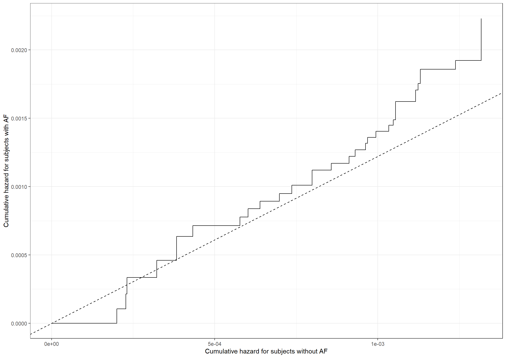

Code show/hide
pbc3 <- read.csv("data/pbc3.csv")
pbc3$log2bili <- with(pbc3, log2(bili))
pbc3$years <- with(pbc3, days/365.25)pbc3 <- read.csv("data/pbc3.csv")
pbc3$log2bili <- with(pbc3, log2(bili))
pbc3$years <- with(pbc3, days/365.25)proc import out=pbc3
datafile="data/pbc3.csv"
dbms=csv replace;
run;
data pbc3;
set pbc3;
log2bili=log2(bili);
run;library(survival)
# Treatment
coxph(Surv(years, status != 0) ~ tment + alb + log2bili + tt(tment),
data = pbc3, tt = function(x,t, ...) (x==1)*t, method = "breslow")Call:
coxph(formula = Surv(years, status != 0) ~ tment + alb + log2bili +
tt(tment), data = pbc3, tt = function(x, t, ...) (x == 1) *
t, method = "breslow")
coef exp(coef) se(coef) z p
tment -0.65937 0.51718 0.40576 -1.625 0.104
alb -0.09136 0.91269 0.02167 -4.216 2.49e-05
log2bili 0.66299 1.94059 0.07478 8.866 < 2e-16
tt(tment) 0.04497 1.04600 0.17811 0.253 0.801
Likelihood ratio test=120.1 on 4 df, p=< 2.2e-16
n= 343, number of events= 88
(6 observations deleted due to missingness)coxph(Surv(years, status != 0) ~ tment + alb + log2bili + tt(tment),
data = pbc3, tt = function(x,t, ...) (x==1)*log(t), method = "breslow")Call:
coxph(formula = Surv(years, status != 0) ~ tment + alb + log2bili +
tt(tment), data = pbc3, tt = function(x, t, ...) (x == 1) *
log(t), method = "breslow")
coef exp(coef) se(coef) z p
tment -0.61330 0.54156 0.24327 -2.521 0.0117
alb -0.09152 0.91254 0.02163 -4.232 2.32e-05
log2bili 0.66214 1.93894 0.07462 8.873 < 2e-16
tt(tment) 0.10834 1.11442 0.25424 0.426 0.6700
Likelihood ratio test=120.2 on 4 df, p=< 2.2e-16
n= 343, number of events= 88
(6 observations deleted due to missingness)coxph(Surv(years, status != 0) ~ tment + alb + log2bili + tt(tment),
data = pbc3, tt = function(x,t, ...) (x==1)*(t>2), method = "breslow")Call:
coxph(formula = Surv(years, status != 0) ~ tment + alb + log2bili +
tt(tment), data = pbc3, tt = function(x, t, ...) (x == 1) *
(t > 2), method = "breslow")
coef exp(coef) se(coef) z p
tment -0.58773 0.55559 0.29228 -2.011 0.0443
alb -0.09104 0.91298 0.02168 -4.199 2.68e-05
log2bili 0.66456 1.94363 0.07466 8.901 < 2e-16
tt(tment) 0.03169 1.03220 0.43384 0.073 0.9418
Likelihood ratio test=120 on 4 df, p=< 2.2e-16
n= 343, number of events= 88
(6 observations deleted due to missingness)# Albumin
coxph(Surv(years, status != 0) ~ tment + alb + log2bili + tt(alb),
data = pbc3, tt = function(x,t, ...) x*t, method = "breslow")Call:
coxph(formula = Surv(years, status != 0) ~ tment + alb + log2bili +
tt(alb), data = pbc3, tt = function(x, t, ...) x * t, method = "breslow")
coef exp(coef) se(coef) z p
tment -0.59080 0.55389 0.22472 -2.629 0.008562
alb -0.13296 0.87550 0.03998 -3.326 0.000882
log2bili 0.66405 1.94265 0.07476 8.882 < 2e-16
tt(alb) 0.02317 1.02344 0.01854 1.250 0.211400
Likelihood ratio test=121.6 on 4 df, p=< 2.2e-16
n= 343, number of events= 88
(6 observations deleted due to missingness)coxph(Surv(years, status != 0) ~ tment + alb + log2bili + tt(alb),
data = pbc3, tt = function(x,t, ...) x*log(t), method = "breslow")Call:
coxph(formula = Surv(years, status != 0) ~ tment + alb + log2bili +
tt(alb), data = pbc3, tt = function(x, t, ...) x * log(t),
method = "breslow")
coef exp(coef) se(coef) z p
tment -0.58958 0.55456 0.22460 -2.625 0.00867
alb -0.10194 0.90308 0.02349 -4.341 1.42e-05
log2bili 0.66488 1.94425 0.07483 8.885 < 2e-16
tt(alb) 0.03347 1.03404 0.02561 1.307 0.19120
Likelihood ratio test=121.8 on 4 df, p=< 2.2e-16
n= 343, number of events= 88
(6 observations deleted due to missingness)coxph(Surv(years, status != 0) ~ tment + alb + log2bili + tt(alb),
data = pbc3, tt = function(x,t, ...) (x)*(t>2), method = "breslow")Call:
coxph(formula = Surv(years, status != 0) ~ tment + alb + log2bili +
tt(alb), data = pbc3, tt = function(x, t, ...) (x) * (t >
2), method = "breslow")
coef exp(coef) se(coef) z p
tment -0.59037 0.55412 0.22472 -2.627 0.00861
alb -0.11369 0.89254 0.02779 -4.091 4.3e-05
log2bili 0.66488 1.94426 0.07470 8.901 < 2e-16
tt(alb) 0.05674 1.05838 0.04330 1.310 0.19005
Likelihood ratio test=121.8 on 4 df, p=< 2.2e-16
n= 343, number of events= 88
(6 observations deleted due to missingness)# Log2 bilirubin
coxph(Surv(years, status != 0) ~ tment + alb + log2bili + tt(log2bili),
data = pbc3, tt = function(x,t, ...) x*t, method = "breslow")Call:
coxph(formula = Surv(years, status != 0) ~ tment + alb + log2bili +
tt(log2bili), data = pbc3, tt = function(x, t, ...) x * t,
method = "breslow")
coef exp(coef) se(coef) z p
tment -0.54631 0.57908 0.22571 -2.420 0.0155
alb -0.09009 0.91385 0.02173 -4.147 3.37e-05
log2bili 0.77736 2.17571 0.13382 5.809 6.28e-09
tt(log2bili) -0.06299 0.93895 0.06181 -1.019 0.3081
Likelihood ratio test=121.1 on 4 df, p=< 2.2e-16
n= 343, number of events= 88
(6 observations deleted due to missingness)coxph(Surv(years, status != 0) ~ tment + alb + log2bili + tt(log2bili),
data = pbc3, tt = function(x,t, ...) x*log(t), method = "breslow")Call:
coxph(formula = Surv(years, status != 0) ~ tment + alb + log2bili +
tt(log2bili), data = pbc3, tt = function(x, t, ...) x * log(t),
method = "breslow")
coef exp(coef) se(coef) z p
tment -0.55398 0.57466 0.22536 -2.458 0.014
alb -0.09050 0.91347 0.02170 -4.170 3.04e-05
log2bili 0.68779 1.98931 0.07968 8.632 < 2e-16
tt(log2bili) -0.07701 0.92588 0.08780 -0.877 0.380
Likelihood ratio test=120.8 on 4 df, p=< 2.2e-16
n= 343, number of events= 88
(6 observations deleted due to missingness)coxph(Surv(years, status != 0) ~ tment + alb + log2bili + tt(log2bili),
data = pbc3, tt = function(x,t, ...) (x)*(t>2), method = "breslow")Call:
coxph(formula = Surv(years, status != 0) ~ tment + alb + log2bili +
tt(log2bili), data = pbc3, tt = function(x, t, ...) (x) *
(t > 2), method = "breslow")
coef exp(coef) se(coef) z p
tment -0.54878 0.57765 0.22521 -2.437 0.0148
alb -0.09045 0.91352 0.02176 -4.157 3.22e-05
log2bili 0.73519 2.08587 0.09487 7.750 9.22e-15
tt(log2bili) -0.18232 0.83334 0.14910 -1.223 0.2214
Likelihood ratio test=121.5 on 4 df, p=< 2.2e-16
n= 343, number of events= 88
(6 observations deleted due to missingness)* Treatment;
proc phreg data=pbc3;
class tment (ref='0');
model days*status(0)=tment alb log2bili tmenttime/rl;
tmenttime=(tment=1)*days;
run;
proc phreg data=pbc3;
class tment (ref='0');
model days*status(0)=tment alb log2bili tmentlogtime/rl;
tmentlogtime=(tment=1)*log(days);
run;
proc phreg data=pbc3;
class tment (ref='0');
model days*status(0)=tment alb log2bili tmentt0/rl;
tmentt0=(tment=1)*(days>2*365.25);
run;
* Log bilirubin;
proc phreg data=pbc3;
class tment (ref='0');
model days*status(0)=tment alb log2bili bilitime/rl;
bilitime=log2bili*days;
run;
proc phreg data=pbc3;
class tment (ref='0');
model days*status(0)=tment alb log2bili bililogtime/rl;
bililogtime=log2bili*log(days);
run;
proc phreg data=pbc3;
class tment (ref='0');
model days*status(0)=tment alb log2bili bilit0/rl;
bilit0=log2bili*(days>2*365.25);
run;
* Albumin;
proc phreg data=pbc3;
class tment (ref='0');
model days*status(0)=tment alb log2bili albtime/rl;
albtime=alb*days;
run;
proc phreg data=pbc3;
class tment (ref='0');
model days*status(0)=tment alb log2bili alblogtime/rl;
alblogtime=alb*log(days);
run;
proc phreg data=pbc3;
class tment (ref='0');
model days*status(0)=tment alb log2bili albt0/rl;
albt0=alb*(days>2*365.25);
run;bissau <- read.csv("data/bissau.csv")
# Variables for age as time scale and dtp binary
bissau$agein <- with(bissau, age/(365.24/12))
bissau$ageout <- with(bissau, agein+fuptime/(365.24/12))
bissau$dtpany <- 1*with(bissau, dtp>0)proc import
datafile="data/bissau.csv" out=bissau
dbms = csv replace;
run;
data bissau;
set bissau;
agein=age/(365.24/12);
ageout=agein+fuptime/(365.24/12);
dtpany=(dtp>0);
run; table(bissau$bcg, bissau$dtp)
0 1 2 3
0 1942 19 9 3
1 1159 1299 582 261100*table(bissau$bcg, bissau$dtp) / rowSums(table(bissau$bcg, bissau$dtp))
0 1 2 3
0 98.4287886 0.9630005 0.4561581 0.1520527
1 35.1105726 39.3517116 17.6310209 7.9066949proc freq data=bissau;
tables bcg*dtp bcg*dtpany/ nocol nopercent;
run;library(survival)
coxph(Surv(agein,ageout,dead!=0)~bcg,data=bissau,method="breslow",timefix=F)Call:
coxph(formula = Surv(agein, ageout, dead != 0) ~ bcg, data = bissau,
method = "breslow", timefix = F)
coef exp(coef) se(coef) z p
bcg -0.3558 0.7006 0.1407 -2.529 0.0114
Likelihood ratio test=6.28 on 1 df, p=0.01218
n= 5274, number of events= 222 coxph(Surv(agein,ageout,dead!=0)~dtpany,data=bissau,method="breslow",timefix=F)Call:
coxph(formula = Surv(agein, ageout, dead != 0) ~ dtpany, data = bissau,
method = "breslow", timefix = F)
coef exp(coef) se(coef) z p
dtpany -0.03855 0.96218 0.14904 -0.259 0.796
Likelihood ratio test=0.07 on 1 df, p=0.7958
n= 5274, number of events= 222 coxph(Surv(agein,ageout,dead!=0)~bcg+dtpany,data=bissau,method="breslow",timefix=F)Call:
coxph(formula = Surv(agein, ageout, dead != 0) ~ bcg + dtpany,
data = bissau, method = "breslow", timefix = F)
coef exp(coef) se(coef) z p
bcg -0.5585 0.5720 0.1924 -2.902 0.0037
dtpany 0.3286 1.3890 0.2021 1.625 0.1041
Likelihood ratio test=9.01 on 2 df, p=0.01106
n= 5274, number of events= 222 coxph(Surv(agein,ageout,dead!=0)~bcg*dtpany,data=bissau,method="breslow",timefix=F)Call:
coxph(formula = Surv(agein, ageout, dead != 0) ~ bcg * dtpany,
data = bissau, method = "breslow", timefix = F)
coef exp(coef) se(coef) z p
bcg -0.5764 0.5619 0.2023 -2.849 0.00439
dtpany 0.1252 1.1334 0.7178 0.174 0.86151
bcg:dtpany 0.2212 1.2475 0.7429 0.298 0.76595
Likelihood ratio test=9.1 on 3 df, p=0.02796
n= 5274, number of events= 222 proc phreg data=bissau;
model ageout*dead(0) = bcg / entry=agein rl;
run;
proc phreg data=bissau;
model ageout*dead(0) = dtpany / entry=agein rl;
run;
proc phreg data=bissau;
model ageout*dead(0) = bcg dtpany / entry=agein rl;
run;
proc phreg data=bissau;
model ageout*dead(0) = bcg dtpany bcg*dtpany / entry=agein rl;
run;testis <- read.csv("data/testis.csv")
# Add extra variables
testis$lpyrs <- log(testis$pyrs)
testis$par2 <- as.numeric(testis$parity < 2)proc import out=testis
datafile="data/testis.csv"
dbms=csv replace;
run;
data testis;
set testis;
lpyrs = log(pyrs);
par2 = (parity>=2);
run;# Data frames
df1 <- data.frame(x1 = 1900 + c(50, 58, 63, 68, 73),
y1 = rep(0, 5),
x2 = rep(2000, 5),
y2 = 100 - c(50, 58, 63, 68, 73))
df2 <- data.frame(x1 = 1968.25 + c(0, 0, 0, 0, 73-68.25),
y1 = c(68.25 - 50, 68.25 - 58, 68.25 - 63, 68.25 - 68, 0),
x2 = rep(1993, 5),
y2 = 100 - c(50, 58, 63, 68, 73) - 7)
df3 <- data.frame(x1 = c(1968.25, 1993, 1968.25, 1968.25, 1968.25 + 1.75, 1968.25 + 6.75, 1968.25 + 11.75),
y1 = c(0, 0, 0, 15, 20, 25, 30),
x2 = c(1968.25, 1993, 1993, 1993, 1993, 1993, 1993),
y2 = c(68.25 - 50, 100 - 57, 0, 15, 20, 25, 30)
)
# For labels
D <- tapply( testis$cases, list( testis$age, testis$cohort ), sum )
Y <- tapply( testis$pyrs, list( testis$age, testis$cohort ), sum )
x <- outer( unique( testis$age )+c(17.5,rep(2.5,4)),
unique( testis$cohort )+2.5,
"+" )
x[1,] <- x[1,]-c(0,3,3,3,2)
y <- outer( c(13,17,22,27,32), rep(1,5), "*" )
label_data <- data.frame(x = x[!is.na(Y)],
y = y[!is.na(Y)],
label = paste( round( Y/10^4 )[!is.na(Y)] )
)
label_data2 <- data.frame(x = 1956, y = 47.5, label = "PY (10,000)")
# Create plot
library(ggplot2)
theme_general <- theme_bw() +
theme(legend.position = "bottom",
text = element_text(size = 16),
axis.text.x = element_text(size = 16),
axis.text.y = element_text(size = 16))
fig3.1 <- ggplot(df1) +
geom_vline(xintercept = c(1968.25, 1993),
size = 1, linetype = "dotted") +
geom_hline(yintercept = c(0, 15, 20, 25, 30),
size = 1, linetype = "dotted") +
geom_segment(aes(x = x1, y = y1,
xend = x2, yend = y2),
data = df1,
size = 1, linetype = "dotted") +
geom_segment(aes(x = x1, y = y1,
xend = x2, yend = y2),
data = df2,
size = 1.5) +
geom_segment(aes(x = x1, y = y1,
xend = x2, yend = y2),
data = df3,
size = 1.5) +
theme_general +
xlab("Calendar time") +
ylab("Age (years)") +
scale_x_continuous(expand = expansion(mult = c(0.005, 0.005)),
limits = c(1950, 2000),
breaks = seq(1950, 2000, 10)) +
scale_y_continuous(expand = expansion(mult = c(0.005, 0.005)),
limits = c(0, 50),
breaks = seq(0, 50, 10)) +
geom_label(aes(x = x, y = y, label = label), size = 5, label.size = NA,
hjust = 1.1, vjust = 0.7,
data = label_data) +
theme(plot.margin=unit(c(0.75, 0.75, 0.75, 0.75), "cm"))
fig3.1
library(broom)
library(lmtest)
# Column 1
options(contrasts=c("contr.treatment", "contr.poly"))
testis$age <- as.factor(testis$age)
testis$age <- relevel(testis$age, ref = '20')
summary(glm(cases ~ offset(lpyrs) + par2 + age, data = testis, family = poisson))
Call:
glm(formula = cases ~ offset(lpyrs) + par2 + age, family = poisson,
data = testis)
Coefficients:
Estimate Std. Error z value Pr(>|z|)
(Intercept) -9.04435 0.08393 -107.757 < 2e-16 ***
par2 0.21663 0.08405 2.577 0.00996 **
age0 -4.03084 0.21105 -19.099 < 2e-16 ***
age15 -1.17094 0.11886 -9.851 < 2e-16 ***
age25 0.55962 0.09802 5.709 1.14e-08 ***
age30 0.75263 0.13272 5.671 1.42e-08 ***
---
Signif. codes: 0 '***' 0.001 '**' 0.01 '*' 0.05 '.' 0.1 ' ' 1
(Dispersion parameter for poisson family taken to be 1)
Null deviance: 1647.61 on 236 degrees of freedom
Residual deviance: 201.07 on 231 degrees of freedom
AIC: 540.84
Number of Fisher Scoring iterations: 5# Column 2
testis$motherage <- as.factor(testis$motherage)
testis$motherage <- relevel(testis$motherage, ref = "30")
testis$cohort <- as.factor(testis$cohort)
testis$cohort <- relevel(testis$cohort, ref = "1973")
summary(poisfull<-glm(cases ~ offset(lpyrs) + par2 + age + motherage + cohort,
data = testis,family = poisson))
Call:
glm(formula = cases ~ offset(lpyrs) + par2 + age + motherage +
cohort, family = poisson, data = testis)
Coefficients:
Estimate Std. Error z value Pr(>|z|)
(Intercept) -9.11684 0.29271 -31.146 < 2e-16 ***
par2 0.22967 0.09112 2.521 0.0117 *
age0 -4.00398 0.23905 -16.749 < 2e-16 ***
age15 -1.16652 0.12522 -9.316 < 2e-16 ***
age25 0.61710 0.10445 5.908 3.46e-09 ***
age30 0.95356 0.15378 6.201 5.62e-10 ***
motherage12 0.02926 0.24121 0.121 0.9034
motherage20 0.05796 0.22233 0.261 0.7943
motherage25 -0.11663 0.22510 -0.518 0.6044
cohort1950 -0.36275 0.28800 -1.260 0.2078
cohort1958 -0.08031 0.24838 -0.323 0.7464
cohort1963 0.12346 0.23712 0.521 0.6026
cohort1968 0.13376 0.23600 0.567 0.5709
---
Signif. codes: 0 '***' 0.001 '**' 0.01 '*' 0.05 '.' 0.1 ' ' 1
(Dispersion parameter for poisson family taken to be 1)
Null deviance: 1647.6 on 236 degrees of freedom
Residual deviance: 190.2 on 224 degrees of freedom
AIC: 543.98
Number of Fisher Scoring iterations: 5tidy(poisfull, exponentiate = TRUE, conf.int = TRUE)# A tibble: 13 × 7
term estimate std.error statistic p.value conf.low conf.high
<chr> <dbl> <dbl> <dbl> <dbl> <dbl> <dbl>
1 (Intercept) 0.000110 0.293 -31.1 5.74e-213 0.0000605 0.000191
2 par2 1.26 0.0911 2.52 1.17e- 2 1.05 1.51
3 age0 0.0182 0.239 -16.7 5.72e- 63 0.0112 0.0286
4 age15 0.311 0.125 -9.32 1.21e- 20 0.243 0.397
5 age25 1.85 0.104 5.91 3.46e- 9 1.51 2.28
6 age30 2.59 0.154 6.20 5.62e- 10 1.91 3.50
7 motherage12 1.03 0.241 0.121 9.03e- 1 0.652 1.68
8 motherage20 1.06 0.222 0.261 7.94e- 1 0.698 1.68
9 motherage25 0.890 0.225 -0.518 6.04e- 1 0.583 1.41
10 cohort1950 0.696 0.288 -1.26 2.08e- 1 0.398 1.23
11 cohort1958 0.923 0.248 -0.323 7.46e- 1 0.574 1.52
12 cohort1963 1.13 0.237 0.521 6.03e- 1 0.720 1.83
13 cohort1968 1.14 0.236 0.567 5.71e- 1 0.729 1.84 # LRT for mother's age
poismage<-glm(cases ~ offset(lpyrs) + par2 + age + cohort,
data = testis,family = poisson)
lrtest(poisfull,poismage)Likelihood ratio test
Model 1: cases ~ offset(lpyrs) + par2 + age + motherage + cohort
Model 2: cases ~ offset(lpyrs) + par2 + age + cohort
#Df LogLik Df Chisq Pr(>Chisq)
1 13 -258.99
2 10 -260.25 -3 2.5336 0.4692# LRT for birth cohort of son
poiscohort<-glm(cases ~ offset(lpyrs) + par2 + age + motherage,
data = testis,family = poisson)
lrtest(poisfull,poiscohort)Likelihood ratio test
Model 1: cases ~ offset(lpyrs) + par2 + age + motherage + cohort
Model 2: cases ~ offset(lpyrs) + par2 + age + motherage
#Df LogLik Df Chisq Pr(>Chisq)
1 13 -258.99
2 9 -263.60 -4 9.2204 0.05582 .
---
Signif. codes: 0 '***' 0.001 '**' 0.01 '*' 0.05 '.' 0.1 ' ' 1# LRT parity and age
poisinteract<-glm(cases ~ offset(lpyrs) + par2 + age + motherage + cohort + par2*age,
data = testis, family = poisson)
lrtest(poisfull,poisinteract)Likelihood ratio test
Model 1: cases ~ offset(lpyrs) + par2 + age + motherage + cohort
Model 2: cases ~ offset(lpyrs) + par2 + age + motherage + cohort + par2 *
age
#Df LogLik Df Chisq Pr(>Chisq)
1 13 -258.99
2 17 -255.11 4 7.7606 0.1008* Column 1;
proc genmod;
class age (ref='20') par2 (ref='1');
model cases=par2 age/dist=poi offset=lpyrs type3;
estimate 'RR' par2 1 -1/exp;
run;
* Column 2;
proc genmod;
class age (ref='20') motherage(ref='30') cohort(ref='1973') par2 (ref='1');
model cases=par2 age motherage cohort/dist=poi offset=lpyrs type3;
estimate 'RR' par2 1 -1/exp;
run;
* In-text interaction test;
proc genmod;
class age (ref='20') motherage(ref='30') cohort(ref='1973') par2 (ref='1');
model cases=par2 age motherage cohort par2*age/dist=poi offset=lpyrs type3;
run;# HR for seminomas
tidy(glm(semi ~ offset(lpyrs) + par2 + age + motherage + cohort,
data = testis, family = poisson),
exponentiate = T, conf.int = T)# A tibble: 13 × 7
term estimate std.error statistic p.value conf.low conf.high
<chr> <dbl> <dbl> <dbl> <dbl> <dbl> <dbl>
1 (Intercept) 0.0000297 1.00 -10.4 1.98e-25 0.00000314 0.000178
2 par2 1.23 0.171 1.23 2.19e- 1 0.886 1.73
3 age0 0.00297 1.13 -5.17 2.38e- 7 0.000147 0.0176
4 age15 0.0949 0.443 -5.32 1.03e- 7 0.0357 0.209
5 age25 2.98 0.200 5.47 4.55e- 8 2.03 4.44
6 age30 6.62 0.245 7.71 1.30e-14 4.11 10.8
7 motherage12 0.900 0.640 -0.164 8.69e- 1 0.295 3.94
8 motherage20 0.978 0.618 -0.0360 9.71e- 1 0.339 4.15
9 motherage25 1.23 0.617 0.338 7.35e- 1 0.427 5.22
10 cohort1950 0.731 0.907 -0.345 7.30e- 1 0.140 5.71
11 cohort1958 0.966 0.879 -0.0389 9.69e- 1 0.198 7.26
12 cohort1963 0.862 0.869 -0.171 8.64e- 1 0.180 6.39
13 cohort1968 0.691 0.879 -0.421 6.74e- 1 0.140 5.18 # HR for non-seminomas
tidy(glm(nonsemi ~ offset(lpyrs) + par2 + age + motherage + cohort,
data = testis, family = poisson),
exponentiate = T, conf.int = T)# A tibble: 13 × 7
term estimate std.error statistic p.value conf.low conf.high
<chr> <dbl> <dbl> <dbl> <dbl> <dbl> <dbl>
1 (Intercept) 0.0000860 0.308 -30.4 7.09e-203 0.0000459 0.000154
2 par2 1.27 0.108 2.19 2.88e- 2 1.03 1.56
3 age0 0.0223 0.246 -15.4 9.35e- 54 0.0135 0.0355
4 age15 0.369 0.133 -7.48 7.32e- 14 0.283 0.478
5 age25 1.49 0.125 3.21 1.35e- 3 1.17 1.91
6 age30 1.21 0.229 0.846 3.97e- 1 0.762 1.88
7 motherage12 1.09 0.264 0.341 7.33e- 1 0.662 1.87
8 motherage20 1.10 0.239 0.382 7.03e- 1 0.700 1.79
9 motherage25 0.804 0.244 -0.892 3.72e- 1 0.508 1.33
10 cohort1950 0.639 0.328 -1.37 1.72e- 1 0.335 1.22
11 cohort1958 0.828 0.264 -0.718 4.73e- 1 0.499 1.41
12 cohort1963 1.15 0.247 0.550 5.82e- 1 0.715 1.89
13 cohort1968 1.19 0.245 0.722 4.70e- 1 0.748 1.96 * seminomas;
proc genmod;
class age (ref='20') motherage(ref='30') cohort(ref='1973') par2 (ref='1');
model semi=par2 age motherage cohort/dist=poi offset=lpyrs type3;
estimate 'RR' par2 1 -1/exp;
run;
* non-seminomas;
proc genmod;
class age (ref='20') motherage(ref='30') cohort(ref='1973') par2 (ref='1');
model nonsemi=par2 age motherage cohort/dist=poi offset=lpyrs type3;
estimate 'RR' par2 1 -1/exp;
run;prova <- read.csv("data/prova.csv", na.strings = c("."))
# Treatment 2x2 factorial
prova$beh <- with(prova, as.factor(scle + beta*2))
# Extra variables
provany <- prova
provany$log2bili <- with(provany, log2(bili))
provany$btime <- ifelse(provany$bleed == 1, provany$timebleed, provany$timedeath)
provany$d0time <- ifelse(provany$bleed == 1, provany$timebleed, provany$timedeath)
provany$dead0 <- ifelse(provany$bleed == 1, 0, provany$death)
provany$outof0 <- ifelse(provany$bleed == 1, 1, provany$death)
provany$bdtime <- ifelse(provany$bleed == 1, provany$timedeath, NA)
provany$deadb <- ifelse(provany$bleed == 1, provany$death, NA)
provany$wait <- ifelse(provany$bleed == 1, provany$bdtime - provany$timebleed, NA)proc import out=prova
datafile="data/prova.csv"
dbms=csv replace;
run;
data prova;
set prova;
beh = scle + beta*2;
log2bili = log2(bili);
if bleed = 1 then wait = timedeath - timebleed;
run;
data provany;
set prova;
if bleed=1 then do; btime=timebleed; d0time=timebleed; dead0=0; outof0=1;
bdtime=timedeath; deadb=death; wait=bdtime-timebleed;
end;
if bleed=0 then do; btime=timedeath; d0time=timedeath; dead0=death; outof0=death;
bdtime=.; deadb=.; wait=.; end;
log2bili=log2(bili);
run;library(survival)
options(contrasts=c("contr.treatment", "contr.poly"))
## Column 1
# Variceal bleeding
coxph(Surv(btime, bleed) ~ beh, data = provany, ties = "breslow")Call:
coxph(formula = Surv(btime, bleed) ~ beh, data = provany, ties = "breslow")
coef exp(coef) se(coef) z p
beh1 0.05563 1.05721 0.39235 0.142 0.887
beh2 -0.03972 0.96106 0.40039 -0.099 0.921
beh3 -0.03205 0.96846 0.40063 -0.080 0.936
Likelihood ratio test=0.07 on 3 df, p=0.9951
n= 286, number of events= 50 # logrank test: Variceal bleeding
lr<-survdiff(Surv(btime, bleed) ~ beh, data = provany)
c(lr$chisq,lr$pvalue)[1] 0.07114524 0.99505932# Death without bleeding
cox1<-coxph(Surv(d0time, dead0) ~ beh, data = provany, ties = "breslow")
# logrank test: Death without bleeding
lr<-survdiff(Surv(d0time, dead0) ~ beh, data = provany)
c(lr$chisq,lr$pvalue)[1] 12.856428541 0.004957601# Death without bleeding - additive model
cox2<-coxph(Surv(d0time, dead0) ~ scle + beta, data = provany, ties = "breslow")
library(lmtest)
# Death without bleeding - remove propranolol
lrtest(cox2,cox1)Likelihood ratio test
Model 1: Surv(d0time, dead0) ~ scle + beta
Model 2: Surv(d0time, dead0) ~ beh
#Df LogLik Df Chisq Pr(>Chisq)
1 2 -234.19
2 3 -233.38 1 1.627 0.2021cox3<-coxph(Surv(d0time, dead0) ~ scle, data = provany, ties = "breslow")
lrtest(cox3,cox2)Likelihood ratio test
Model 1: Surv(d0time, dead0) ~ scle
Model 2: Surv(d0time, dead0) ~ scle + beta
#Df LogLik Df Chisq Pr(>Chisq)
1 1 -234.36
2 2 -234.19 1 0.348 0.5553cox3Call:
coxph(formula = Surv(d0time, dead0) ~ scle, data = provany, ties = "breslow")
coef exp(coef) se(coef) z p
scle 1.0180 2.7677 0.3281 3.103 0.00191
Likelihood ratio test=10.76 on 1 df, p=0.001037
n= 286, number of events= 46 ## Column 2
# Variceal bleeding
coxph(Surv(btime, bleed) ~ beh + sex + coag + log2bili + factor(varsize),
data = provany, ties = "breslow")Call:
coxph(formula = Surv(btime, bleed) ~ beh + sex + coag + log2bili +
factor(varsize), data = provany, ties = "breslow")
coef exp(coef) se(coef) z p
beh1 0.176844 1.193445 0.433336 0.408 0.68320
beh2 0.207005 1.229989 0.424001 0.488 0.62539
beh3 0.030562 1.031034 0.420784 0.073 0.94210
sex -0.025865 0.974467 0.329095 -0.079 0.93736
coag -0.020647 0.979565 0.007819 -2.641 0.00827
log2bili 0.191011 1.210473 0.149142 1.281 0.20029
factor(varsize)2 0.741460 2.098998 0.414959 1.787 0.07397
factor(varsize)3 1.884681 6.584252 0.442325 4.261 2.04e-05
Likelihood ratio test=37.67 on 8 df, p=8.654e-06
n= 271, number of events= 47
(15 observations deleted due to missingness)# Death without bleeding
coxph(Surv(d0time, dead0) ~ beh + sex + coag + log2bili + factor(varsize),
data = provany, ties = "breslow")Call:
coxph(formula = Surv(d0time, dead0) ~ beh + sex + coag + log2bili +
factor(varsize), data = provany, ties = "breslow")
coef exp(coef) se(coef) z p
beh1 0.826468 2.285233 0.458574 1.802 0.07151
beh2 -0.159630 0.852459 0.575047 -0.278 0.78132
beh3 0.910385 2.485279 0.420391 2.166 0.03034
sex 0.841579 2.320027 0.415722 2.024 0.04293
coag -0.008112 0.991920 0.006804 -1.192 0.23312
log2bili 0.445359 1.561051 0.136749 3.257 0.00113
factor(varsize)2 0.221738 1.248245 0.347159 0.639 0.52300
factor(varsize)3 0.753294 2.123984 0.448544 1.679 0.09307
Likelihood ratio test=42.13 on 8 df, p=1.283e-06
n= 271, number of events= 46
(15 observations deleted due to missingness)* Table 3.3 column 1;
* Variceal bleeding;
* logrank test is the score test;
proc phreg data=provany;
class beh (ref='0');
model btime*bleed(0)=beh / type3(lr);
run;
* Death without bleeding;
* logrank test is the score test;
proc phreg data=provany;
class beh (ref='0');
model d0time*dead0(0)=beh / type3(lr);
run;
* Death without bleeding - in text LRT for additive model;
proc phreg data=provany;
model d0time*dead0(0)=scle|beta / type3(lr);
estimate 'both' scle 1 beta 1 scle*beta 1;
run;
proc phreg data=provany;
model d0time*dead0(0)=scle beta / type3(lr);
run;
* Death without bleeding - remove propranolol;
proc phreg data=provany;
model d0time*dead0(0)=scle / type3(lr);
run;
* Table 3.3 column 2;
* Variceal bleeding;
proc phreg data=provany;
class beh (ref='0') varsize (ref='1');
model btime*bleed(0)=beh sex coag log2bili varsize / type3(lr);
run;
* Death without bleeding;
proc phreg data=provany;
class beh (ref='0') varsize (ref='1');
model d0time*dead0(0)=beh sex coag log2bili varsize / type3(lr);
run;# Composite
cox<-coxph(Surv(btime, outof0) ~ beh + sex + coag + log2bili + factor(varsize),
data = provany, ties = "breslow")
coxCall:
coxph(formula = Surv(btime, outof0) ~ beh + sex + coag + log2bili +
factor(varsize), data = provany, ties = "breslow")
coef exp(coef) se(coef) z p
beh1 0.525145 1.690704 0.312502 1.680 0.09287
beh2 0.100189 1.105380 0.337918 0.296 0.76686
beh3 0.494807 1.640181 0.291638 1.697 0.08976
sex 0.360259 1.433701 0.253379 1.422 0.15508
coag -0.013600 0.986492 0.005287 -2.572 0.01010
log2bili 0.328376 1.388711 0.101761 3.227 0.00125
factor(varsize)2 0.446403 1.562681 0.263275 1.696 0.08997
factor(varsize)3 1.332535 3.790639 0.301391 4.421 9.81e-06
Likelihood ratio test=65.71 on 8 df, p=3.489e-11
n= 271, number of events= 93
(15 observations deleted due to missingness)# LRT for treatment
coxreduced<-coxph(Surv(btime, outof0) ~ sex + coag + log2bili + factor(varsize),
data = provany, ties = "breslow")
lrtest(coxreduced,cox)Likelihood ratio test
Model 1: Surv(btime, outof0) ~ sex + coag + log2bili + factor(varsize)
Model 2: Surv(btime, outof0) ~ beh + sex + coag + log2bili + factor(varsize)
#Df LogLik Df Chisq Pr(>Chisq)
1 5 -457.74
2 8 -455.35 3 4.7717 0.1893proc phreg data=provany;
class beh (ref='0') varsize (ref='1');
model btime*outof0(0)=beh sex coag log2bili varsize / type3(lr);
run;# Time since randomization (tsr)
# Column 1
coxtsr<-coxph(Surv(btime, bdtime, deadb != 0) ~ beh + sex + log2bili,
data = provany, ties = "breslow")
coxtsrCall:
coxph(formula = Surv(btime, bdtime, deadb != 0) ~ beh + sex +
log2bili, data = provany, ties = "breslow")
coef exp(coef) se(coef) z p
beh1 -1.4127 0.2435 0.6787 -2.081 0.0374
beh2 -0.1146 0.8918 0.5952 -0.192 0.8474
beh3 0.7327 2.0807 0.5439 1.347 0.1780
sex 1.1389 3.1234 0.5039 2.260 0.0238
log2bili 0.1088 1.1149 0.2075 0.524 0.6001
Likelihood ratio test=15.35 on 5 df, p=0.008958
n= 48, number of events= 27
(238 observations deleted due to missingness)coxtsr0<-coxph(Surv(btime, bdtime, deadb != 0) ~ sex + log2bili,
data = provany, ties = "breslow")
coxtsr0Call:
coxph(formula = Surv(btime, bdtime, deadb != 0) ~ sex + log2bili,
data = provany, ties = "breslow")
coef exp(coef) se(coef) z p
sex 0.9095 2.4830 0.4807 1.892 0.0585
log2bili -0.1618 0.8506 0.1826 -0.886 0.3758
Likelihood ratio test=4.19 on 2 df, p=0.1232
n= 48, number of events= 27
(238 observations deleted due to missingness)# LRT for beh
library(lmtest)
lrtest(coxtsr,coxtsr0)Likelihood ratio test
Model 1: Surv(btime, bdtime, deadb != 0) ~ beh + sex + log2bili
Model 2: Surv(btime, bdtime, deadb != 0) ~ sex + log2bili
#Df LogLik Df Chisq Pr(>Chisq)
1 5 -59.626
2 2 -65.208 -3 11.164 0.01087 *
---
Signif. codes: 0 '***' 0.001 '**' 0.01 '*' 0.05 '.' 0.1 ' ' 1coxnoint<-coxph(Surv(btime, bdtime, deadb != 0) ~ scle + beta + sex + log2bili,
data = provany, ties = "breslow")
# LRT interaction
lrtest(coxnoint,coxtsr)Likelihood ratio test
Model 1: Surv(btime, bdtime, deadb != 0) ~ scle + beta + sex + log2bili
Model 2: Surv(btime, bdtime, deadb != 0) ~ beh + sex + log2bili
#Df LogLik Df Chisq Pr(>Chisq)
1 4 -63.061
2 5 -59.626 1 6.8707 0.008762 **
---
Signif. codes: 0 '***' 0.001 '**' 0.01 '*' 0.05 '.' 0.1 ' ' 1# Column 2
provany$tsb<-provany$btime
coxtsr_tt<-coxph(Surv(btime, bdtime, deadb != 0) ~ beh + sex + log2bili+tt(tsb),
data = provany, ties = "breslow",
tt=function(x, t, ...) {
dt <- t-x
cbind(dt1=1*(dt<5), dt2=1*(dt>=5 & dt<10))
})
coxtsr_ttCall:
coxph(formula = Surv(btime, bdtime, deadb != 0) ~ beh + sex +
log2bili + tt(tsb), data = provany, ties = "breslow", tt = function(x,
t, ...) {
dt <- t - x
cbind(dt1 = 1 * (dt < 5), dt2 = 1 * (dt >= 5 & dt < 10))
})
coef exp(coef) se(coef) z p
beh1 -1.15606 0.31472 0.68428 -1.689 0.09113
beh2 -0.02371 0.97657 0.63136 -0.038 0.97005
beh3 0.42544 1.53026 0.61129 0.696 0.48645
sex 1.11875 3.06103 0.53261 2.101 0.03568
log2bili -0.04822 0.95292 0.22285 -0.216 0.82869
tt(tsb)dt1 2.94285 18.96981 0.73891 3.983 6.81e-05
tt(tsb)dt2 2.34525 10.43583 0.80285 2.921 0.00349
Likelihood ratio test=33.65 on 7 df, p=2.005e-05
n= 48, number of events= 27
(238 observations deleted due to missingness)# LRT for time-dependent covariates
lrtest(coxtsr_tt,coxtsr)Likelihood ratio test
Model 1: Surv(btime, bdtime, deadb != 0) ~ beh + sex + log2bili + tt(tsb)
Model 2: Surv(btime, bdtime, deadb != 0) ~ beh + sex + log2bili
#Df LogLik Df Chisq Pr(>Chisq)
1 7 -50.478
2 5 -59.626 -2 18.295 0.0001065 ***
---
Signif. codes: 0 '***' 0.001 '**' 0.01 '*' 0.05 '.' 0.1 ' ' 1# LRT for beh
coxtsr_tt_reduced<-coxph(Surv(btime, bdtime, deadb != 0) ~ sex + log2bili+tt(tsb),
data = provany, ties = "breslow",
tt=function(x, t, ...) {
dt <- t-x
cbind(dt1=1*(dt<5), dt2=1*(dt>=5 & dt<10))
})
lrtest(coxtsr_tt_reduced,coxtsr_tt)Likelihood ratio test
Model 1: Surv(btime, bdtime, deadb != 0) ~ sex + log2bili + tt(tsb)
Model 2: Surv(btime, bdtime, deadb != 0) ~ beh + sex + log2bili + tt(tsb)
#Df LogLik Df Chisq Pr(>Chisq)
1 4 -53.081
2 7 -50.478 3 5.2064 0.1573# In text, model linear effect of time-dependent covariate
coxph(Surv(btime, bdtime, deadb != 0) ~ beh+sex + log2bili+tt(tsb),
data = provany, ties = "breslow",
tt=function(x, t, ...){t-x})Call:
coxph(formula = Surv(btime, bdtime, deadb != 0) ~ beh + sex +
log2bili + tt(tsb), data = provany, ties = "breslow", tt = function(x,
t, ...) {
t - x
})
coef exp(coef) se(coef) z p
beh1 -1.462260 0.231712 0.685283 -2.134 0.03286
beh2 -0.028375 0.972024 0.620246 -0.046 0.96351
beh3 0.599364 1.820960 0.574135 1.044 0.29651
sex 0.899664 2.458776 0.530853 1.695 0.09012
log2bili 0.349775 1.418749 0.224830 1.556 0.11977
tt(tsb) -0.005179 0.994834 0.001769 -2.927 0.00342
Likelihood ratio test=25.54 on 6 df, p=0.0002708
n= 48, number of events= 27
(238 observations deleted due to missingness)# Duration
# Column 1
coxdur<-coxph(Surv(wait, deadb != 0) ~ beh + sex + log2bili,
data = provany, ties = "breslow")
coxdurCall:
coxph(formula = Surv(wait, deadb != 0) ~ beh + sex + log2bili,
data = provany, ties = "breslow")
coef exp(coef) se(coef) z p
beh1 -0.9971 0.3689 0.6429 -1.551 0.121
beh2 -0.2995 0.7412 0.5965 -0.502 0.616
beh3 0.8708 2.3889 0.5136 1.695 0.090
sex 0.6497 1.9149 0.5264 1.234 0.217
log2bili 0.2677 1.3070 0.1790 1.496 0.135
Likelihood ratio test=13.24 on 5 df, p=0.0212
n= 48, number of events= 27
(238 observations deleted due to missingness)coxdur0<-coxph(Surv(wait, deadb != 0) ~ sex + log2bili,
data = provany, ties = "breslow")
coxdur0Call:
coxph(formula = Surv(wait, deadb != 0) ~ sex + log2bili, data = provany,
ties = "breslow")
coef exp(coef) se(coef) z p
sex 0.6742 1.9625 0.4662 1.446 0.148
log2bili 0.1210 1.1286 0.1677 0.721 0.471
Likelihood ratio test=3.03 on 2 df, p=0.2195
n= 48, number of events= 27
(238 observations deleted due to missingness)# LRT for beh
lrtest(coxdur,coxdur0)Likelihood ratio test
Model 1: Surv(wait, deadb != 0) ~ beh + sex + log2bili
Model 2: Surv(wait, deadb != 0) ~ sex + log2bili
#Df LogLik Df Chisq Pr(>Chisq)
1 5 -86.494
2 2 -91.600 -3 10.211 0.01685 *
---
Signif. codes: 0 '***' 0.001 '**' 0.01 '*' 0.05 '.' 0.1 ' ' 1# Column 2
provany$tsr<-provany$btime
coxdur_tt<-coxph(Surv(wait, deadb != 0) ~ beh + sex + log2bili+tt(tsr),
data = provany, ties = "breslow",
tt=function(x, t, ...) {
dt <- x+t
cbind(v1=1*(dt<1*365.25), v2=1*(dt>=1*365.25 & dt<2*365.25))
})
coxdur_ttCall:
coxph(formula = Surv(wait, deadb != 0) ~ beh + sex + log2bili +
tt(tsr), data = provany, ties = "breslow", tt = function(x,
t, ...) {
dt <- x + t
cbind(v1 = 1 * (dt < 1 * 365.25), v2 = 1 * (dt >= 1 * 365.25 &
dt < 2 * 365.25))
})
coef exp(coef) se(coef) z p
beh1 -1.0192 0.3609 0.6502 -1.567 0.117
beh2 -0.3116 0.7323 0.6005 -0.519 0.604
beh3 0.8467 2.3320 0.5244 1.615 0.106
sex 0.6441 1.9043 0.5303 1.215 0.225
log2bili 0.2829 1.3269 0.1966 1.439 0.150
tt(tsr)v1 -0.1723 0.8417 0.9096 -0.189 0.850
tt(tsr)v2 -0.2211 0.8016 0.8862 -0.250 0.803
Likelihood ratio test=13.31 on 7 df, p=0.065
n= 48, number of events= 27
(238 observations deleted due to missingness)# LRT for time-dependent covariates
lrtest(coxdur,coxdur_tt)Likelihood ratio test
Model 1: Surv(wait, deadb != 0) ~ beh + sex + log2bili
Model 2: Surv(wait, deadb != 0) ~ beh + sex + log2bili + tt(tsr)
#Df LogLik Df Chisq Pr(>Chisq)
1 5 -86.494
2 7 -86.464 2 0.0618 0.9696coxdur_tt_reduced<-coxph(Surv(btime, bdtime, deadb != 0) ~ sex + log2bili+tt(tsb),
data = provany, ties = "breslow",
tt=function(x, t, ...) {
dt <- t-x
cbind(dt1=1*(dt<5), dt2=1*(dt>=5 & dt<10))
})* Time since randomisation;
* Column 1;
proc phreg data=provany atrisk;
class beh (ref='0');
model bdtime*deadb(0)=beh sex log2bili / entry=btime rl type3(lr);
run;
* LRT interaction scle*beta;
proc phreg data=provany atrisk;
class beh (ref='0');
model bdtime*deadb(0)=scle|beta sex log2bili / entry=btime rl type3(lr);
run;
* Column 2;
proc phreg data=provany;
class beh (ref='0');
model bdtime*deadb(0)=beh sex log2bili wait1 wait2 / entry=btime rl type3(lr);
wait1=0; wait2=0;
if (bdtime-btime<5) then wait1=1;
if (5<=bdtime-btime<10) then wait2=1;
duration: test wait1=0, wait2=0;
run;
* In text: Linear effect of time-dependent covariate;
proc phreg data=provany;
class beh (ref='0');
model bdtime*deadb(0)=beh sex log2bili lin / entry=btime rl type3(lr);
lin=bdtime-btime;
run;
* Duration;
* Column 1;
proc phreg data=provany;
class beh (ref='0');
model wait*deadb(0)=beh sex log2bili / type3(lr);
baseline out=cumhazwait cumhaz=breslowwait covariates=covar;
run;
* Column 2;
proc phreg data=provany;
class beh (ref='0');
model wait*deadb(0)=beh sex log2bili time1 time2 / type3(lr);
time1=0; time2=0;
if (btime+wait<365.25) then time1=1;
if (365.25<=btime+wait<2*365.25) then time2=1;
timeeff: test time1=0, time2=0;
run;# Plotting style
library(ggplot2)
library(tidyverse)
theme_general <- theme_bw() +
theme(legend.position = "bottom",
text = element_text(size = 20),
axis.text.x = element_text(size = 20),
axis.text.y = element_text(size = 20))
# Make zeros print as "0" always for plot axes
library(stringr)
prettyZero <- function(l){
max.decimals = max(nchar(str_extract(l, "\\.[0-9]+")), na.rm = T)-1
lnew = formatC(l, replace.zero = T, zero.print = "0",
digits = max.decimals, format = "f", preserve.width=T)
return(lnew)
}
# Extract cumulative baseline hazard
coxcumhaz <- survfit(coxtsr,
newdata = data.frame(sex = 0,
beh = "0",
log2bili = 0))
# Collect data for plot
coxdata <- data.frame(cumhaz = append(0,coxcumhaz$cumhaz),
time = append(0,coxcumhaz$time),
type = rep("Breslow estimate", 1+length(coxcumhaz$time)))
# Create Figure 3.2
fig3.2 <- ggplot(aes(x = time / 365.25, y = cumhaz), data = coxdata) +
geom_step(linewidth = 1) +
xlab("Time since randomization (years)") +
ylab("Cumulative hazard") +
scale_x_continuous(expand = expansion(mult = c(0.005, 0.05))) +
scale_y_continuous(expand = expansion(mult = c(0.005, 0.05))) +
theme_general
fig3.2
data covar;
input beh sex log2bili;
datalines;
0 0 0
;
run;
proc phreg data=provany atrisk;
class beh (ref='0');
model bdtime*deadb(0)=beh sex log2bili/entry=btime rl type3(lr);
baseline out=cumhaztime cumhaz=breslowtime covariates=covar;
run;
data cumhaztime;
set cumhaztime;
bdtimeyears = bdtime / 365.25;
run;
proc gplot data=cumhaztime;
plot breslowtime*bdtimeyears/haxis=axis1 vaxis=axis2;
axis1 order=0 to 4 by 1 minor=none
label=('Time since randomization (Years)');
axis2 order=0 to 1.1 by 0.1 minor=none label=(a=90 'Cumulative hazard');
symbol1 v=none i=stepjl c=blue;
run;
quit;# Extract cumulative baseline hazard
coxcumhaz <- survfit(coxdur,
newdata = data.frame(sex = 0,
beh = "0",
log2bili = 0))
# Collect data for plot
coxdata <- data.frame(cumhaz = append(0,coxcumhaz$cumhaz),
time = append(0,coxcumhaz$time),
type = rep("Breslow estimate", 1+length(coxcumhaz$time)))
# Create Figure 3.3
fig3.3 <- ggplot(aes(x = time / 365.25, y = cumhaz), data = coxdata) +
geom_step(linewidth = 1) +
xlab("Duration (years)") +
ylab("Cumulative hazard") +
scale_x_continuous(expand = expansion(mult = c(0.005, 0.05)), ) +
scale_y_continuous(expand = expansion(mult = c(0.005, 0.05)),labels = prettyZero) +
theme_general
fig3.3
* Duration;
data covar;
input beh sex log2bili;
datalines;
0 0 0
;
run;
proc phreg data=provany;
class beh (ref='0');
model wait*deadb(0)=beh sex log2bili / type3(lr);
baseline out=cumhazwait cumhaz=breslowwait covariates=covar;
run;
data cumhazwait;
set cumhazwait;
waityears = wait / 365.25;
run;
proc gplot data=cumhazwait;
plot breslowwait*waityears/haxis=axis1 vaxis=axis2;
axis1 order=0 to 4 by 1 minor=none label=('Duration (Years)');
axis2 order=0 to 0.2 by 0.05 minor=none label=(a=90 'Cumulative hazard');
symbol1 v=none i=stepjl c=blue;
run;
quit;# All bleeds
provasplit11 <- subset(provany, bleed == 1)
# Split by duration
provasplit1 <- survSplit(Surv(wait, deadb != 0) ~ ., data = provasplit11,
cut = c(5, 10),
episode = "wint")
provasplit1$start <- with(provasplit1,
btime + ifelse(wint == 1, 0, ifelse(wint == 2, 5 , 10))
)
provasplit1$stop <- with(provasplit1, btime + wait)
provasplit1$risktime <- with(provasplit1, wait - tstart)
provasplit1$logrisktime <- log(provasplit1$risktime)
provasplit1$fail <- provasplit1$event
# Split by time since rand (t)
provasplit2 <- survSplit(Surv(start, stop, fail) ~ ., data = provasplit1,
cut = c((1) * 365.25, (2) * 365.25),
episode = "tint")
provasplit2$risktime2 <- with(provasplit2, stop - start)
provasplit2$risktimeys2 <- provasplit2$risktime2 / 365.25
provasplit2$logrisktime2 <- log(provasplit2$risktime2)
provasplit2$fail2 <- provasplit2$fail
# Summarize the data, Table 3.9 output
aggregate(cbind(fail2, risktimeys2) ~ tint + wint, provasplit2,
FUN = function(x) c(count = length(x),
sum = sum(x))) tint wint fail2.count fail2.sum risktimeys2.count risktimeys2.sum
1 1 1 39 8 39.00000000 0.46338125
2 2 1 11 2 11.00000000 0.13073238
3 3 1 1 0 1.00000000 0.01368925
4 1 2 30 2 30.00000000 0.38603696
5 2 2 9 1 9.00000000 0.11635866
6 3 2 1 0 1.00000000 0.01368925
7 1 3 28 7 28.00000000 12.42984257
8 2 3 28 5 28.00000000 19.88227242
9 3 3 19 4 19.00000000 21.56468172data provasplit1;
set provany;
where bleed=1;
fail=(wait<5)*(deadb ne 0);
risktime=min(5,wait);
logrisk=log(risktime); wint=1;
start=btime; slut=btime+min(5,wait); output;
if wait>=5 then do;
fail=(wait<10)*(deadb ne 0);
risktime=min(5,wait-5);
logrisk=log(risktime); wint=2;
start=btime+5; slut=btime+min(10,wait); output; end;
if wait>10 then do;
fail=deadb ne 0;
risktime=wait-10;
logrisk=log(risktime); wint=3;
start=btime+10; slut=btime+wait; output; end;
run;
data provasplit2;
set provasplit1;
if start<365.25 then do; risktime2=min(slut,365.25)-start;
fail2=fail*(slut<365.25); logrisk2=log(risktime2); tint=1; output;
if slut>365.25 then do; risktime2=min(slut,2*365.25)-365.25; logrisk2=log(risktime2);
fail2=fail*(slut<2*365.25); tint=2; output; end;
if slut>2*365.25 then do; risktime2=slut-2*365.25; logrisk2=log(risktime2);
fail2=fail; tint=3; output; end;
end;
if 365.25<=start<2*365.25 then do; risktime2=min(slut,2*365.25)-start;
fail2=fail*(slut<2*365.25); logrisk2=log(risktime2); tint=2; output;
if slut>2*365.25 then do; risktime2=slut-2*365.25; logrisk2=log(risktime2);
fail2=fail; tint=3; output; end;
end;
if start>=2*365.25 then do; risktime2=slut-start; logrisk2=log(risktime2);
fail2=fail; tint=3; output;
end;
run;
data provasplit2;
set provasplit2;
risktime2ys=risktime2/365.25;
run;
proc means data=provasplit2 sum;
class wint tint;
var fail2 risktime2ys;
run;# part (a)
summary(glm(fail ~ offset(log(risktime)) + beh + relevel(as.factor(wint), ref = "3") +
sex + log2bili, data = provasplit1, family = poisson))
Call:
glm(formula = fail ~ offset(log(risktime)) + beh + relevel(as.factor(wint),
ref = "3") + sex + log2bili, family = poisson, data = provasplit1)
Coefficients:
Estimate Std. Error z value Pr(>|z|)
(Intercept) -8.8925 1.1282 -7.882 3.21e-15 ***
beh1 -1.1301 0.6423 -1.759 0.0785 .
beh2 -0.3138 0.5887 -0.533 0.5940
beh3 0.9667 0.5157 1.874 0.0609 .
relevel(as.factor(wint), ref = "3")1 3.6024 0.4387 8.212 < 2e-16 ***
relevel(as.factor(wint), ref = "3")2 2.8437 0.6373 4.462 8.11e-06 ***
sex 0.7327 0.5190 1.412 0.1581
log2bili 0.2877 0.1824 1.577 0.1147
---
Signif. codes: 0 '***' 0.001 '**' 0.01 '*' 0.05 '.' 0.1 ' ' 1
(Dispersion parameter for poisson family taken to be 1)
Null deviance: 225.56 on 122 degrees of freedom
Residual deviance: 149.88 on 115 degrees of freedom
(4 observations deleted due to missingness)
AIC: 219.88
Number of Fisher Scoring iterations: 8# part (b)
summary(glm(fail2 ~ offset(log(risktime2)) + beh + relevel(as.factor(tint), ref = "3") +
sex + log2bili, data = provasplit2, family = poisson))
Call:
glm(formula = fail2 ~ offset(log(risktime2)) + beh + relevel(as.factor(tint),
ref = "3") + sex + log2bili, family = poisson, data = provasplit2)
Coefficients:
Estimate Std. Error z value Pr(>|z|)
(Intercept) -8.6775 1.2008 -7.226 4.96e-13 ***
beh1 -1.2810 0.6522 -1.964 0.0495 *
beh2 -0.4317 0.5657 -0.763 0.4454
beh3 0.8006 0.5254 1.524 0.1275
relevel(as.factor(tint), ref = "3")1 1.5068 0.5785 2.605 0.0092 **
relevel(as.factor(tint), ref = "3")2 0.4304 0.6482 0.664 0.5067
sex 0.9494 0.4922 1.929 0.0538 .
log2bili 0.1792 0.2049 0.875 0.3817
---
Signif. codes: 0 '***' 0.001 '**' 0.01 '*' 0.05 '.' 0.1 ' ' 1
(Dispersion parameter for poisson family taken to be 1)
Null deviance: 237.84 on 160 degrees of freedom
Residual deviance: 202.95 on 153 degrees of freedom
(5 observations deleted due to missingness)
AIC: 272.95
Number of Fisher Scoring iterations: 8# part (c)
summary(glm(fail2 ~ offset(log(risktime2)) + beh +
relevel(as.factor(wint), ref = "3") +
relevel(as.factor(tint), ref = "3") +
sex + log2bili, data = provasplit2, family = poisson))
Call:
glm(formula = fail2 ~ offset(log(risktime2)) + beh + relevel(as.factor(wint),
ref = "3") + relevel(as.factor(tint), ref = "3") + sex +
log2bili, family = poisson, data = provasplit2)
Coefficients:
Estimate Std. Error z value Pr(>|z|)
(Intercept) -8.9276 1.1636 -7.673 1.68e-14 ***
beh1 -1.1101 0.6475 -1.714 0.0864 .
beh2 -0.3181 0.5788 -0.550 0.5826
beh3 0.8260 0.5138 1.608 0.1079
relevel(as.factor(wint), ref = "3")1 3.3500 0.4641 7.219 5.25e-13 ***
relevel(as.factor(wint), ref = "3")2 2.5827 0.6593 3.917 8.97e-05 ***
relevel(as.factor(tint), ref = "3")1 0.7325 0.6176 1.186 0.2356
relevel(as.factor(tint), ref = "3")2 0.1889 0.6546 0.289 0.7729
sex 0.7672 0.5090 1.507 0.1317
log2bili 0.2301 0.1900 1.211 0.2260
---
Signif. codes: 0 '***' 0.001 '**' 0.01 '*' 0.05 '.' 0.1 ' ' 1
(Dispersion parameter for poisson family taken to be 1)
Null deviance: 237.84 on 160 degrees of freedom
Residual deviance: 160.21 on 151 degrees of freedom
(5 observations deleted due to missingness)
AIC: 234.21
Number of Fisher Scoring iterations: 7# Interaction model, in-text but not shown
summary(glm(fail2 ~ offset(log(risktime2)) + beh + as.factor(tint) * as.factor(wint) + sex + log2bili,
data = provasplit2, family = poisson)
)
Call:
glm(formula = fail2 ~ offset(log(risktime2)) + beh + as.factor(tint) *
as.factor(wint) + sex + log2bili, family = poisson, data = provasplit2)
Coefficients:
Estimate Std. Error z value Pr(>|z|)
(Intercept) -4.72678 1.20626 -3.919 8.91e-05 ***
beh1 -1.09421 0.64703 -1.691 0.0908 .
beh2 -0.31016 0.57923 -0.535 0.5923
beh3 0.83850 0.51484 1.629 0.1034
as.factor(tint)2 -0.74368 1.06413 -0.699 0.4846
as.factor(tint)3 -14.39376 1275.75399 -0.011 0.9910
as.factor(wint)2 -1.03184 0.79349 -1.300 0.1935
as.factor(wint)3 -3.37183 0.51906 -6.496 8.24e-11 ***
sex 0.77074 0.50839 1.516 0.1295
log2bili 0.21347 0.18999 1.124 0.2612
as.factor(tint)2:as.factor(wint)2 1.26419 1.62046 0.780 0.4353
as.factor(tint)3:as.factor(wint)2 1.03184 1804.18859 0.001 0.9995
as.factor(tint)2:as.factor(wint)3 0.08176 1.23780 0.066 0.9473
as.factor(tint)3:as.factor(wint)3 13.70295 1275.75414 0.011 0.9914
---
Signif. codes: 0 '***' 0.001 '**' 0.01 '*' 0.05 '.' 0.1 ' ' 1
(Dispersion parameter for poisson family taken to be 1)
Null deviance: 237.84 on 160 degrees of freedom
Residual deviance: 158.93 on 147 degrees of freedom
(5 observations deleted due to missingness)
AIC: 240.93
Number of Fisher Scoring iterations: 13# LRT for time-dependent covariates
glmboth<-glm(fail2 ~ offset(log(risktime2)) + beh +
relevel(as.factor(wint), ref = "3") +
relevel(as.factor(tint), ref = "3") +
sex + log2bili, data = provasplit2, family = poisson)
glmwint<-glm(fail2 ~ offset(log(risktime2)) + beh +
relevel(as.factor(wint), ref = "3") +
sex + log2bili, data = provasplit2, family = poisson)
glmtint<-glm(fail2 ~ offset(log(risktime2)) + beh +
relevel(as.factor(tint), ref = "3") +
sex + log2bili, data = provasplit2, family = poisson)
# LRT effect of duration since bleeding
lrtest(glmtint,glmboth)Likelihood ratio test
Model 1: fail2 ~ offset(log(risktime2)) + beh + relevel(as.factor(tint),
ref = "3") + sex + log2bili
Model 2: fail2 ~ offset(log(risktime2)) + beh + relevel(as.factor(wint),
ref = "3") + relevel(as.factor(tint), ref = "3") + sex +
log2bili
#Df LogLik Df Chisq Pr(>Chisq)
1 8 -128.47
2 10 -107.11 2 42.736 5.248e-10 ***
---
Signif. codes: 0 '***' 0.001 '**' 0.01 '*' 0.05 '.' 0.1 ' ' 1# LRT effect of time since randomization
lrtest(glmwint,glmboth)Likelihood ratio test
Model 1: fail2 ~ offset(log(risktime2)) + beh + relevel(as.factor(wint),
ref = "3") + sex + log2bili
Model 2: fail2 ~ offset(log(risktime2)) + beh + relevel(as.factor(wint),
ref = "3") + relevel(as.factor(tint), ref = "3") + sex +
log2bili
#Df LogLik Df Chisq Pr(>Chisq)
1 8 -108.08
2 10 -107.11 2 1.9499 0.3772* part (a);
proc genmod data=provasplit1;
class beh (ref='0') wint;
model fail=beh wint sex log2bili/dist=poi offset=logrisk type3;
run;
* part (b);
proc genmod data=provasplit2;
class beh (ref='0') tint;
model fail2=beh tint sex log2bili/dist=poi offset=logrisk2 type3;
run;
* part (c);
proc genmod data=provasplit2;
class beh (ref='0') wint tint;
model fail2=beh wint tint sex log2bili/dist=poi offset=logrisk2 type3;
run;
* Interaction model, in-text;
proc genmod data=provasplit2;
class beh (ref='0') wint tint;
model fail2=beh wint tint wint*tint sex log2bili/dist=poi offset=logrisk2 type3;
run;# Prepare data set for analysis - double
double1 <- provany %>% mutate(time = d0time,
status = dead0,
entrytime = 0,
sex1 = sex,
sex2 = 0,
age1 = age,
age2 = 0,
bili1 = log2bili,
bili2 = log2bili * 0,
bleeding = 1)
double2 <- provany %>% filter(bleed == 1) %>%
mutate(time = bdtime,
status = deadb,
entrytime = btime,
sex1 = 0,
sex2 = sex,
age1 = 0,
age2 = age,
bili1 = log2bili * 0,
bili2 = log2bili,
bleeding = 2)
double <- as.data.frame(rbind(double1, double2))
# part (a)
Table3.13a <- coxph(Surv(entrytime, time, status != 0) ~ strata(bleeding) + sex1 + sex2 + bili1 + bili2,
data = double, ties = "breslow")
Table3.13aCall:
coxph(formula = Surv(entrytime, time, status != 0) ~ strata(bleeding) +
sex1 + sex2 + bili1 + bili2, data = double, ties = "breslow")
coef exp(coef) se(coef) z p
sex1 1.0408 2.8316 0.4110 2.532 0.0113
sex2 0.9095 2.4830 0.4807 1.892 0.0585
bili1 0.5275 1.6947 0.1152 4.580 4.64e-06
bili2 -0.1618 0.8506 0.1826 -0.886 0.3758
Likelihood ratio test=32.5 on 4 df, p=1.509e-06
n= 323, number of events= 73
(13 observations deleted due to missingness)# part (b)
Table3.13b <- coxph(Surv(entrytime, time, status != 0) ~ strata(bleeding) + sex + bili1 + bili2,
data = double, ties = "breslow")
Table3.13bCall:
coxph(formula = Surv(entrytime, time, status != 0) ~ strata(bleeding) +
sex + bili1 + bili2, data = double, ties = "breslow")
coef exp(coef) se(coef) z p
sex 0.9866 2.6820 0.3115 3.167 0.00154
bili1 0.5269 1.6936 0.1150 4.582 4.61e-06
bili2 -0.1685 0.8449 0.1794 -0.939 0.34767
Likelihood ratio test=32.46 on 3 df, p=4.185e-07
n= 323, number of events= 73
(13 observations deleted due to missingness)# LRT sex
lrtest(Table3.13b,Table3.13a)Likelihood ratio test
Model 1: Surv(entrytime, time, status != 0) ~ strata(bleeding) + sex +
bili1 + bili2
Model 2: Surv(entrytime, time, status != 0) ~ strata(bleeding) + sex1 +
sex2 + bili1 + bili2
#Df LogLik Df Chisq Pr(>Chisq)
1 3 -288.94
2 4 -288.92 1 0.043 0.8357# In-text: LRT log2(bilirubin)
Table3.13bx <- coxph(Surv(entrytime, time, status != 0) ~ strata(bleeding) + sex1 + sex2 + log2bili,
data = double, ties = "breslow")
lrtest(Table3.13bx,Table3.13a)Likelihood ratio test
Model 1: Surv(entrytime, time, status != 0) ~ strata(bleeding) + sex1 +
sex2 + log2bili
Model 2: Surv(entrytime, time, status != 0) ~ strata(bleeding) + sex1 +
sex2 + bili1 + bili2
#Df LogLik Df Chisq Pr(>Chisq)
1 3 -293.86
2 4 -288.92 1 9.8962 0.001656 **
---
Signif. codes: 0 '***' 0.001 '**' 0.01 '*' 0.05 '.' 0.1 ' ' 1# part (c)
Table3.13c <- coxph(Surv(entrytime, time, status != 0) ~ strata(bleeding) + sex + bili1,
data = double, ties = "breslow")
Table3.13cCall:
coxph(formula = Surv(entrytime, time, status != 0) ~ strata(bleeding) +
sex + bili1, data = double, ties = "breslow")
coef exp(coef) se(coef) z p
sex 0.9423 2.5659 0.3072 3.067 0.00216
bili1 0.5263 1.6927 0.1149 4.582 4.61e-06
Likelihood ratio test=31.58 on 2 df, p=1.387e-07
n= 323, number of events= 73
(13 observations deleted due to missingness)# In-text: LRT proportionality
ph<-coxph(Surv(entrytime, time, status != 0) ~ bleeding + sex + bili1,
data = double, ties = "breslow")
pht<-coxph(Surv(entrytime, time, status != 0) ~ bleeding + tt(bleeding)
+ sex + bili1,
data = double, ties = "breslow",
tt = function(x,t, ...){
bleedt = x*log(t)
})
lrtest(ph, pht)Likelihood ratio test
Model 1: Surv(entrytime, time, status != 0) ~ bleeding + sex + bili1
Model 2: Surv(entrytime, time, status != 0) ~ bleeding + tt(bleeding) +
sex + bili1
#Df LogLik Df Chisq Pr(>Chisq)
1 3 -343.23
2 4 -335.42 1 15.615 7.764e-05 ***
---
Signif. codes: 0 '***' 0.001 '**' 0.01 '*' 0.05 '.' 0.1 ' ' 1* Prepare data set for analysis - double;
data double;
set provany;
time=d0time;
status=dead0;
entrytime=0;
sex1=sex;
sex2=0;
age1=age;
age2=0;
bili1=log2bili;
bili2=log2bili*0;
bleeding=1;
output;
if bleed=1 then do;
time=bdtime;
status=deadb;
entrytime=btime;
sex1=0;
sex2=sex;
age1=0;
age2=age;
bili1=log2bili*0;
bili2=log2bili;
bleeding=2;
output;
end;
run;
* part (a);
proc phreg data=double;
model time*status(0)=sex1 sex2 bili1 bili2 /entry=entrytime type3(lr);
strata bleeding;
test sex1=sex2; /* wald tests instead of LRT */
test bili1=bili2;
run;
* part (b);
proc phreg data=double;
model time*status(0)=sex bili1 bili2 /entry=entrytime type3(lr);
strata bleeding;
run;
* part (c);
proc phreg data=double;
model time*status(0)=sex bili1 /entry=entrytime type3(lr);
strata bleeding;
run;
* In-text: LRT proportionality;
proc phreg data=double;
bleedinglogt=bleeding*log(time);
model time*status(0)=sex bili1 bleeding bleedinglogt /entry=entrytime type3(lr);
run;# Extract cumulative hazard from r1
survr1 <- basehaz(Table3.13a, center = F)
pcumhaz <- data.frame(
cumhaz = c(survr1$hazard[survr1$strata=="stratum=1"],0,survr1$hazard[survr1$strata=="stratum=2"]),
time = c(survr1$time[survr1$strata=="stratum=1"],0,survr1$time[survr1$strata=="stratum=2"]),
strata = c(survr1$strata[survr1$strata=="stratum=1"],"2",survr1$strata[survr1$strata=="stratum=2"])
)
# Create Figure 3.9
fig3.9 <- ggplot(aes(x = time / 365.25, y = cumhaz, linetype = strata), data = pcumhaz) +
geom_step(linewidth = 1) +
xlab("Time since randomization (years)") +
ylab("Cumulative hazard") +
scale_x_continuous(expand = expansion(mult = c(0.005, 0.05))) +
scale_y_continuous(expand = expansion(mult = c(0.005, 0.05))) +
scale_linetype_discrete("Stratum", labels = c("1", "2")) +
theme_general + theme(legend.position = "none")
fig3.9
data covar;
input sex1 sex2 bili1 bili2;
datalines;
0 0 0 0
;
run;
* part (a);
proc phreg data=double;
model time*status(0)=sex1 sex2 bili1 bili2 /entry=entrytime type3(lr);
strata bleeding;
baseline out=mort cumhaz=breslow covariates=covar;
run;
data mort;
set mort;
timeyears = time /365.25;
run;
proc gplot data=mort;
plot breslow*timeyears=bleeding/haxis=axis1 vaxis=axis2;
axis1 order=0 to 4 by 1 minor=none
label=('Time since randomization (Years)');
axis2 order=0 to 4 by 1 minor=none label=(a=90 'Cumulative hazard');
symbol1 v=none i=stepjl c=blue;
symbol2 v=none i=stepjl c=red;
run;
quit;affective <- read.csv("data/affective.csv")
affective$wait <- with(affective, stop - start)proc import out=affective
datafile="data/affective.csv"
dbms=csv replace;
run;
data affective;
set affective;
wait = stop - start;
run; library(survival)
coxph(Surv(start, stop, status == 1) ~ bip,
data = subset(affective, state == 0), ties = "breslow")Call:
coxph(formula = Surv(start, stop, status == 1) ~ bip, data = subset(affective,
state == 0), ties = "breslow")
coef exp(coef) se(coef) z p
bip 0.36593 1.44186 0.09448 3.873 0.000107
Likelihood ratio test=14.24 on 1 df, p=0.0001612
n= 626, number of events= 542 coxph(Surv(start, stop, status == 1) ~ bip + episode,
data = subset(affective, state == 0), ties = "breslow")Call:
coxph(formula = Surv(start, stop, status == 1) ~ bip + episode,
data = subset(affective, state == 0), ties = "breslow")
coef exp(coef) se(coef) z p
bip 0.318455 1.375002 0.094545 3.368 0.000756
episode 0.126230 1.134543 0.008675 14.552 < 2e-16
Likelihood ratio test=177.8 on 2 df, p=< 2.2e-16
n= 626, number of events= 542 coxph(Surv(start, stop, status == 1) ~ bip + episode + I(episode*episode),
data = subset(affective, state == 0), ties = "breslow")Call:
coxph(formula = Surv(start, stop, status == 1) ~ bip + episode +
I(episode * episode), data = subset(affective, state == 0),
ties = "breslow")
coef exp(coef) se(coef) z p
bip 0.066935 1.069226 0.097084 0.689 0.491
episode 0.424503 1.528831 0.032315 13.136 <2e-16
I(episode * episode) -0.013617 0.986476 0.001554 -8.764 <2e-16
Likelihood ratio test=283.1 on 3 df, p=< 2.2e-16
n= 626, number of events= 542 # Episode as categorical
affective$epi<-with(affective, ifelse(episode<10,episode,10))
coxph(Surv(start, stop, status == 1) ~ bip + factor(epi),
data = subset(affective, state == 0), ties = "breslow")Call:
coxph(formula = Surv(start, stop, status == 1) ~ bip + factor(epi),
data = subset(affective, state == 0), ties = "breslow")
coef exp(coef) se(coef) z p
bip 0.08048 1.08381 0.09723 0.828 0.408
factor(epi)2 0.85474 2.35077 0.16125 5.301 1.15e-07
factor(epi)3 1.16051 3.19155 0.18519 6.267 3.69e-10
factor(epi)4 1.38768 4.00554 0.20278 6.843 7.75e-12
factor(epi)5 1.93212 6.90414 0.21559 8.962 < 2e-16
factor(epi)6 1.88500 6.58637 0.23483 8.027 9.97e-16
factor(epi)7 2.08122 8.01427 0.24693 8.429 < 2e-16
factor(epi)8 2.37102 10.70835 0.26095 9.086 < 2e-16
factor(epi)9 3.00076 20.10084 0.27006 11.112 < 2e-16
factor(epi)10 2.85119 17.30842 0.18992 15.013 < 2e-16
Likelihood ratio test=298.5 on 10 df, p=< 2.2e-16
n= 626, number of events= 542 proc phreg data=affective;
where state=0;
model stop*status(2 3)= bip / entry=start rl type3(lr);
run;
proc phreg data=affective;
where state=0;
model stop*status(2 3)= bip episode / entry=start rl type3(lr);
run;
* Episode as categorical;
data affective2;
set affective;
if episode>10 the episode=10;
proc phreg data=affective2;
where state=0;
class episode(ref="1");
model stop*status(2 3)= bip episode / entry=start rl type3(lr);
run;
proc phreg data=affective;
where state=0;
model stop*status(2 3)= bip episode episode*episode / entry=start rl type3(lr);
run;coxph(Surv(start, stop, status == 1) ~ bip + tt(year),
data = subset(affective, state == 0), ties = "breslow",
tt=function(x, t, ...) {
per <- x + 0.5 + t/12
cbind(period1=1*(66<=per & per<71),
period2=1*(71<=per & per<76),
period3=1*(76<=per & per<81),
period4=1*(81<=per))})Call:
coxph(formula = Surv(start, stop, status == 1) ~ bip + tt(year),
data = subset(affective, state == 0), ties = "breslow", tt = function(x,
t, ...) {
per <- x + 0.5 + t/12
cbind(period1 = 1 * (66 <= per & per < 71), period2 = 1 *
(71 <= per & per < 76), period3 = 1 * (76 <= per &
per < 81), period4 = 1 * (81 <= per))
})
coef exp(coef) se(coef) z p
bip 0.36123 1.43509 0.09454 3.821 0.000133
tt(year)period1 -0.25060 0.77834 0.20834 -1.203 0.229047
tt(year)period2 -0.17948 0.83570 0.33095 -0.542 0.587596
tt(year)period3 -0.36737 0.69256 0.43858 -0.838 0.402237
tt(year)period4 -1.33241 0.26384 0.55385 -2.406 0.016141
Likelihood ratio test=25.16 on 5 df, p=0.0001299
n= 626, number of events= 542 proc phreg data=affective;
where state=0;
model stop*status(2 3)= bip period1 period2 period3 period4 / entry=start rl type3(lr);
period=year+0.5+stop/12;
period1=0; period2=0; period3=0; period4=0;
if 71>period>=66 then period1=1;
if 76>period>=71 then period2=1;
if 81>period>=76 then period3=1;
if period>=81 then period4=1;
runAssume that the LEADER data set is loaded in data set leader_mi.
# Cox model, frailty
library(survival)
coxfrail <- coxph(Surv(start, stop, status == 1) ~ treat + frailty(id),
method = "breslow",
data = leader_mi)
summary(coxfrail)Call:
coxph(formula = Surv(start, stop, status == 1) ~ treat + frailty(id),
data = leader_mi, method = "breslow")
n= 10120, number of events= 780
coef se(coef) se2 Chisq DF p
treat -0.1773 0.0877 0.07197 4.09 1 0.0430
frailty(id) 3219.37 3030 0.0084
exp(coef) exp(-coef) lower .95 upper .95
treat 0.8376 1.194 0.7053 0.9946
Iterations: 7 outer, 28 Newton-Raphson
Variance of random effect= 5.686665 I-likelihood = -6863.6
Degrees of freedom for terms= 0.7 3030.1
Concordance= 0.975 (se = 0.001 )
Likelihood ratio test= 2841 on 3031 df, p=1sqrt(coxfrail$fvar[1]) # frailty SD[1] 2.384874# PieceWise constant, frailty
# Make cuts
alltimes <- seq(0,max(leader_mi$stop),length=99)
FunctionIntervalM <- function(a,b) {
seq(from=min(a), to = max(a), by = (max(a)-min(a))/b)
}
cuts <- FunctionIntervalM(a = alltimes, b = 5)
# AG model, piece-wise constant hazards
cut_data <- survSplit(Surv(start, stop, status == 1) ~ .,
leader_mi,
cut = cuts[-1],
episode = "timegroup")
pwch_frail <- coxph(Surv(start, stop, event) ~
treat + strata(timegroup) + frailty(id),
data = cut_data)
summary(pwch_frail)Call:
coxph(formula = Surv(start, stop, event) ~ treat + strata(timegroup) +
frailty(id), data = cut_data)
n= 39070, number of events= 780
coef se(coef) se2 Chisq DF p
treat -0.1773 0.08772 0.07197 4.09 1 0.0430
frailty(id) 3222.23 3033 0.0085
exp(coef) exp(-coef) lower .95 upper .95
treat 0.8375 1.194 0.7052 0.9946
Iterations: 7 outer, 28 Newton-Raphson
Variance of random effect= 5.694404 I-likelihood = -6863.4
Degrees of freedom for terms= 0.7 3033.3
Concordance= 0.975 (se = 0.001 )
Likelihood ratio test= 2843 on 3034 df, p=1sqrt(pwch_frail$fvar[1]) # frailty SD[1] 2.386496Only Cox-type model.
# very slow!
proc phreg data=leader_mi covs(aggregate);
class id;
model stop*status(0 2) = treat / entry=start;
random id / dist=gamma;
title1 'Frailty model for recurrent event data';
run;# Joint frailty model, piece-wise constant hazards
library(frailtypack)
leader_mi$death <- ifelse(leader_mi$status == 2, 1, 0)
jointfrail_pc_eq_mi <- frailtyPenal(
Surv(start, stop, status == 1) ~ cluster(id)+ treat + terminal(death),
formula.terminalEvent = ~ treat,data = leader_mi,
hazard = "Piecewise-equi", nb.int = c(5, 5), recurrentAG = TRUE)
Be patient. The program is computing ...
The program took 296.47 seconds jointfrail_pc_eq_miCall:
frailtyPenal(formula = Surv(start, stop, status == 1) ~ cluster(id) +
treat + terminal(death), formula.terminalEvent = ~treat,
data = leader_mi, recurrentAG = TRUE, hazard = "Piecewise-equi",
nb.int = c(5, 5))
Joint gamma frailty model for recurrent and a terminal event processes
using a Parametrical approach for the hazard function
Recurrences:
-------------
coef exp(coef) SE coef (H) z p
treat -0.18591 0.830349 0.0680109 -2.73353 0.006266
Terminal event:
----------------
coef exp(coef) SE coef (H) z p
treat -0.211397 0.809452 0.0784837 -2.69352 0.0070702
Frailty parameters:
theta (variance of Frailties, w): 0.895749 (SE (H): 0.0306499 ) p = < 1e-16
alpha (w^alpha for terminal event): 1.85978 (SE (H): 0.115069 ) p = < 1e-16
marginal log-likelihood = -16965
Convergence criteria:
parameters = 3.07e-08 likelihood = 0.000848 gradient = 2.12e-07
AIC = Aikaike information Criterion = 1.67777
The expression of the Aikaike Criterion is:
'AIC = (1/n)[np - l(.)]'
n observations= 10120 n subjects= 9340
n recurrent events= 780
n terminal events= 828
n censored events= 9340
number of iterations: 37
Number of nodes for the Gauss-Laguerre quadrature: 32
Exact number of time intervals used: 5
Exact number of time intervals used: 5 sqrt(jointfrail_pc_eq_mi$theta) # Frailty SD[1] 0.9464401summary(jointfrail_pc_eq_mi)Recurrences:
-------------
hr 95% C.I.
treat 0.83 ( 0.73 - 0.95 )
Terminal event:
---------------
hr 95% C.I.
treat 0.81 ( 0.69 - 0.94 ) bmt <- read.csv("data/bmt.csv")
bmt$intxsurv<- bmt$timedeath
bmt$intxrel <- ifelse(bmt$rel == 1, bmt$timerel, bmt$timedeath)
bmt$trm <- ifelse(bmt$rel == 0 & bmt$death == 1, 1, 0)
bmt$tgvhd <- ifelse(bmt$gvhd == 1, bmt$timegvhd, bmt$intxrel)
bmt$tanc500 <- ifelse(bmt$anc500 == 1, bmt$timeanc500, bmt$intxrel)
bmt$state0 <- bmt$rel + 2*bmt$trmproc import out=bmt
datafile="data/bmt.csv"
dbms=csv replace;
run;
data bmt;
set bmt;
intxsurv=timedeath; dead=death;
if rel=1 then intxrel=timerel; if rel=0 then intxrel=timedeath;
trm=0; if rel=0 and death=1 then trm=1;
state0=rel+2*trm;
if gvhd=1 then tgvhd=timegvhd; if gvhd=0 then tgvhd=intxrel;
run;# General theme
library(ggplot2)
theme_general <- theme_bw() +
theme(legend.position = "bottom",
text = element_text(size = 20),
axis.text.x = element_text(size = 20),
axis.text.y = element_text(size = 20))
# Model fit and make plot data
library(survival)
fit1 <- survfit(Surv(tgvhd, gvhd != 0) ~ 1, data = bmt)
pdata1 <- data.frame(cumhaz = fit1$cumhaz,
time = fit1$time)
# Create Figure 3.5
fig3.5 <- ggplot(aes(x = time, y = cumhaz), data = pdata1) +
geom_step(linewidth = 1) +
xlab("Time since bone marrow transplantation (months)") +
ylab("Cumulative GvHD hazard") +
scale_x_continuous(expand = expansion(mult = c(0.005, 0.05)),
limits = c(0, 156), breaks = seq(0, 156, by = 12)) +
scale_y_continuous(expand = expansion(mult = c(0.005, 0.05)),
limits = c(0, 0.8), breaks = seq(0, 0.8, by = 0.1)) +
theme_general
fig3.5
proc phreg data=bmt;
model tgvhd*gvhd(0)=;
baseline out=alfagvh cumhaz=naagvh;
run;
proc gplot data=alfagvh;
plot naagvh*tgvhd/haxis=axis1 vaxis=axis2;
axis1 order=0 to 156 by 12 minor=none
label=('Time since bone marrow transplantation (months)');
axis2 order=0 to 0.8 by 0.1 minor=none
label=(a=90 'Cumulative GvHD hazard');
symbol1 v=none i=stepjl c=blue;
run;
quit;# Reformatting
bmt$nyreltime <- with(bmt, ifelse(tgvhd < intxrel, tgvhd, intxrel))
bmt$nyrel <- with(bmt, ifelse(tgvhd < intxrel, 0, rel))
bmt$nytrm <- with(bmt, ifelse(tgvhd < intxrel, 0, trm))
# Cumulative relapse rate without GvHD
fit11 <- survfit(Surv(nyreltime, nyrel != 0) ~ 1, data = bmt)
# Cumulative relapse rate after GvHD
fit12 <- survfit(Surv(tgvhd, intxrel, rel != 0) ~ 1,
data = subset(bmt, gvhd == 1 & tgvhd < intxrel))
# Collect plot data
pdata11 <- data.frame(cumhaz = fit11$cumhaz, time = fit11$time)
pdata12 <- data.frame(cumhaz = fit12$cumhaz, time = fit12$time)
# Create Figure 3.6
fig3.6 <- ggplot(aes(x = time, y = cumhaz), data = pdata11) +
geom_step(linewidth = 1) +
geom_step(aes(x = time, y = cumhaz), data = pdata12,
linewidth = 1, linetype = "dashed") +
xlab("Time since bone marrow transplantation (months)") +
ylab("Cumulative relapse hazard") +
scale_x_continuous(expand = expansion(mult = c(0.005, 0.05)),
limits = c(0, 156), breaks = seq(0, 156, by = 12)) +
scale_y_continuous(expand = expansion(mult = c(0.005, 0.05)),
limits = c(0, 0.2), breaks = seq(0, 0.2, by = 0.1)) +
theme_general
fig3.6
* Reformatting;
data bmt;
set bmt; /* Censor at GvHD */
if tgvhd<intxrel then do;
nyreltime=tgvhd; nyrel=0; nytrm=0; end;
if tgvhd=intxrel then do;
nyreltime=intxrel; nyrel=rel; nytrm=trm; end;
run;
* Cumulative relapse rate without gvhd;
proc phreg data=bmt;
model nyreltime*nyrel(0)=;
baseline out=alfa0rel cumhaz=naa0rel;
run;
* Cumulative relapse rate after gvhd;
proc phreg data=bmt;
where gvhd=1;
model intxrel*rel(0)=/entry=tgvhd;
baseline out=alfagvhrel cumhaz=naagvhrel;
run;
data alfa0rel;
set alfa0rel;
reltime=nyreltime;
run;
data alfagvhrel;
set alfagvhrel;
reltime=intxrel;
run;
data rel;
merge alfa0rel alfagvhrel;
by reltime;
run;
data relrev;
set rel;
by reltime;
retain last1 last2;
if naa0rel=. then a02=last1; if naa0rel ne . then a02=naa0rel;
if naagvhrel=. then a13=last2; if naagvhrel ne . then a13=naagvhrel;
output;
last1=a02; last2=a13;
run;
legend1 label=none;
proc gplot data=relrev;
plot a02*reltime a13*reltime/haxis=axis1 vaxis=axis2 overlay legend=legend1;
axis1 order=0 to 156 by 12 minor=none
label=('Time since bone marrow transplantation (months)');
axis2 order=0 to 0.2 by 0.1 minor=none
label=(a=90 'Cumulative relapse hazard');
symbol1 v=none i=stepjl c=red;
symbol2 v=none i=stepjl c=blue;
label a02="No GvHD";
label a13="After GvHD";
run;
quit;# Need to get the cumulative hazard estimates at the same time points
# All times
all_t <- sort(unique(c(unique(pdata11$time), unique(pdata12$time))))
# Evaluate each step function at these time points
step11 <- stepfun(x = pdata11$time, y = c(0, pdata11$cumhaz))
step12 <- stepfun(x = pdata12$time, y = c(0, pdata12$cumhaz))
pdata11_a <- data.frame(time = all_t,
cumhaz = step11(all_t))
pdata12_a <- data.frame(time = all_t,
cumhaz = step12(all_t))
# Collect data
pdata_b <- data.frame(cumhaz1 = pdata11_a$cumhaz,
cumhaz2 = pdata12_a$cumhaz,
time = all_t)
# Make zeros print as "0" always in plots
library(stringr)
prettyZero <- function(l){
max.decimals = max(nchar(str_extract(l, "\\.[0-9]+")), na.rm = T)-1
lnew = formatC(l, replace.zero = T, zero.print = "0",
digits = max.decimals, format = "f", preserve.width=T)
return(lnew)
}
# Create Figure 3.7
fig3.7 <- ggplot(aes(x = cumhaz1, y = cumhaz2), data = pdata_b) +
geom_step(linewidth = 1) +
geom_abline(aes(intercept = 0, slope = 0.858), linewidth = 1,
linetype = "dashed") +
xlab("Cumulative relapse hazard: no GvHD") +
ylab("Cumulative relapse hazard: GvHD") +
scale_x_continuous(expand = expansion(mult = c(0.005, 0.05)),
limits = c(0, 0.2), breaks = seq(0, 0.2, by = 0.05),
labels = prettyZero) +
scale_y_continuous(expand = expansion(mult = c(0.005, 0.05)),
limits = c(0, 0.2), breaks = seq(0, 0.2, by = 0.05),
labels = prettyZero) +
theme_general
fig3.7
data relrev;
set relrev;
line=0.858*a02;
run;
proc gplot data=relrev;
plot a13*a02 line*a02/haxis=axis1 vaxis=axis2 overlay;
axis1 order=0 to 0.2 by 0.05 minor=none
label=('Cumulative relapse hazard: no GvHD');
axis2 order=0 to 0.2 by 0.05 minor=none
label=(a=90 'Cumulative relapse hazard: GvHD');
symbol1 v=none i=stepjl c=red;
symbol2 v=none i=rl c=blue;
run;
quit;library(broom)
tidy(coxph(Surv(intxrel,rel!=0) ~ tt(tgvhd), data = bmt, ties="breslow",
tt=function(x, t, ...) {
dt <- t-x
cbind(tdcgvhd=1*(dt>0))
}),exp=T, conf.int = T)# A tibble: 1 × 7
term estimate std.error statistic p.value conf.low conf.high
<chr> <dbl> <dbl> <dbl> <dbl> <dbl> <dbl>
1 tt(tgvhd) 0.858 0.132 -1.15 0.248 0.663 1.11# test ph
tidy(coxph(Surv(intxrel,rel!=0) ~ tt(tgvhd), data = bmt, ties="breslow",
tt=function(x, t, ...) {
dt <- t-x
cbind(tdc=1*(dt>0),tdc_logt=(dt>0)*log(t+1))
}),exp=T, conf.int = T)# A tibble: 2 × 7
term estimate std.error statistic p.value conf.low conf.high
<chr> <dbl> <dbl> <dbl> <dbl> <dbl> <dbl>
1 tt(tgvhd)tdc 0.599 0.409 -1.25 0.210 0.268 1.34
2 tt(tgvhd)tdc_logt 1.18 0.175 0.936 0.349 0.836 1.66proc phreg data=bmt;
model intxrel*rel(0)= ttgvhd / rl type3(lr);
ttgvhd=(intxrel-tgvhd)>0;
run;
* test ph;
proc phreg data=bmt;
model intxrel*rel(0)= ttgvhd ttgvhdlogt / rl type3(lr);
ttgvhd=(intxrel-tgvhd)>0;
ttgvhdlogt=ttgvhd*log(intxrel+1);
run;tidy(coxph(Surv(intxrel,trm!=0) ~ tt(tgvhd), data = bmt, ties="breslow",
tt=function(x, t, ...) {
dt <- t-x
cbind(tdcgvhd=1*(dt>0))
}), exp=T, conf.int = T)# A tibble: 1 × 7
term estimate std.error statistic p.value conf.low conf.high
<chr> <dbl> <dbl> <dbl> <dbl> <dbl> <dbl>
1 tt(tgvhd) 3.11 0.0964 11.8 4.88e-32 2.58 3.76# test ph
tidy(coxph(Surv(intxrel,trm!=0) ~ tt(tgvhd), data = bmt, ties="breslow",
tt=function(x, t, ...) {
dt <- t-x
cbind(tdc=1*(dt>0),tdc_logt=1*(dt>0)*log(t+1))
}), exp=T, conf.int = T)# A tibble: 2 × 7
term estimate std.error statistic p.value conf.low conf.high
<chr> <dbl> <dbl> <dbl> <dbl> <dbl> <dbl>
1 tt(tgvhd)tdc 4.10 0.197 7.18 6.99e-13 2.79 6.03
2 tt(tgvhd)tdc_logt 0.872 0.0851 -1.61 1.07e- 1 0.738 1.03proc phreg data=bmt;
model intxrel*trm(0)= ttgvhd / rl type3(lr);
ttgvhd=(intxrel-tgvhd)>0;
run;
* test ph;
proc phreg data=bmt;
model intxrel*trm(0)= ttgvhd ttgvhdlogt / rl type3(lr);
ttgvhd=(intxrel-tgvhd)>0;
ttgvhdlogt=ttgvhd*log(intxrel+1);
run;# Cumulative death rate without GvHD
fit11 <- survfit(Surv(nyreltime, nytrm != 0) ~ 1, data = bmt)
# Cumulative death rate with GvHD
fit12 <- survfit(Surv(tgvhd, intxrel, trm != 0) ~ 1,
data = subset(bmt, gvhd == 1 & tgvhd < intxrel))
# Collect plot data
pdata11 <- data.frame(cumhaz = fit11$cumhaz,
time = fit11$time)
pdata12 <- data.frame(cumhaz = fit12$cumhaz,
time = fit12$time)
# Need to get the cumulative hazard estimates at the same time points
# All times
all_t <- sort(unique(c(unique(pdata11$time), unique(pdata12$time))))
# Evaluate each step function at these time points
step11 <- stepfun(x = pdata11$time, y = c(0, pdata11$cumhaz))
step12 <- stepfun(x = pdata12$time, y = c(0, pdata12$cumhaz))
pdata11_a <- data.frame(time = all_t,
cumhaz = step11(all_t))
pdata12_a <- data.frame(time = all_t,
cumhaz = step12(all_t))
# Collect data
pdata_b <- data.frame(cumhaz1 = pdata11_a$cumhaz,
cumhaz2 = pdata12_a$cumhaz,
time = all_t)
# Create Figure 3.8
fig3.8 <- ggplot(aes(x = cumhaz1, y = cumhaz2), data = pdata_b) +
geom_step(linewidth = 1) +
geom_abline(aes(intercept = 0, slope = 3.113),
linewidth = 1, linetype = "dashed") +
xlab("Cumulative death hazard: no GvHD") +
ylab("Cumulative death hazard: GvHD") +
scale_x_continuous(expand = expansion(mult = c(0.005, 0.05)),
limits = c(0, 0.2), breaks = seq(0, 0.2, by = 0.05),
labels = prettyZero) +
scale_y_continuous(expand = expansion(mult = c(0.005, 0.05)),
limits = c(0, 1.0), breaks = seq(0, 1.0, by = 0.2),
labels = prettyZero) +
theme_general
fig3.8
* Cumulative death rate without gvhd;
proc phreg data=bmt;
model nyreltime*nytrm(0)=;
baseline out=alfa0dead cumhaz=naa0dead;
run;
* Cumulative death rate with gvhd;
proc phreg data=bmt;
where gvhd=1;
model intxrel*trm(0)=/entry=tgvhd;
baseline out=alfagvhdead cumhaz=naagvhdead;
run;
* Book-keeping for plot;
data alfa0dead;
set alfa0dead;
deadtime=nyreltime;
run;
data alfagvhdead;
set alfagvhdead;
deadtime=intxrel;
run;
data dead;
merge alfa0dead alfagvhdead;
by deadtime;
run;
data deadrev;
set dead;
by deadtime;
retain last1 last2;
if naa0dead=. then a02=last1; if naa0dead ne . then a02=naa0dead;
if naagvhdead=. then a13=last2; if naagvhdead ne . then a13=naagvhdead;
output;
last1=a02; last2=a13;
run;
* Add coefficient;
data deadrev;
set deadrev;
line=3.113*a02;
run;
proc gplot data=deadrev;
plot a13*a02 line*a02/haxis=axis1 vaxis=axis2 overlay;
axis1 order=0 to 0.2 by 0.05 minor=none
label=('Cumulative death hazard: no GvHD');
axis2 order=0 to 1 by 0.2 minor=none
label=(a=90 'Cumulative death hazard: GvHD');
symbol1 v=none i=stepjl c=red;
symbol2 v=none i=rl c=blue;;
run;
quit;# Cumulative death hazards wrt relapse;
# Cumulative death rate no relapse or GvHD
fit11 <- survfit(Surv(intxrel, trm != 0) ~ 1, data = bmt)
# Cumulative death rate after relapse
bmt$intxsurv <- with(bmt, ifelse(intxrel == intxsurv & rel == 1, intxsurv + 0.01, intxsurv))
fit12 <- survfit(Surv(intxrel, intxsurv, death != 0) ~ 1, data = subset(bmt, rel == 1))
# Cumulative death rate after GvHD
fit13 <- survfit(Surv(tgvhd, intxrel, trm != 0) ~ 1, data = subset(bmt, gvhd == 1))
# Collect plot data
pdata11 <- data.frame(cumhaz = fit11$cumhaz, time = fit11$time)
pdata12 <- data.frame(cumhaz = fit12$cumhaz, time = fit12$time)
pdata13 <- data.frame(cumhaz = fit13$cumhaz, time = fit13$time)
tail(pdata12) cumhaz time
220 7.557091 84.70
221 7.557091 85.43
222 7.557091 96.41
223 8.057091 99.80
224 8.057091 99.87
225 8.057091 105.10# Create Figure 3.4
fig3.4 <- ggplot(aes(x = time, y = cumhaz), data = pdata11) +
geom_step(linewidth = 1) +
geom_step(aes(x = time, y = cumhaz), data = pdata12,
linewidth = 1, linetype = "dashed") +
geom_step(aes(x = time, y = cumhaz), data = pdata13,
linewidth = 1, linetype = "dotted") +
xlab("Time since bone marrow transplantation (months)") +
ylab("Cumulative hazard of death") +
scale_x_continuous(expand = expansion(mult = c(0.005, 0.05)),
limits = c(0, 156), breaks = seq(0, 156, by = 12)) +
scale_y_continuous(expand = expansion(mult = c(0.005, 0.05))) +
theme_general
fig3.4
* Cumulative death hazards wrt relapse ;
proc phreg data=bmt;
model intxrel*trm(0)=;
baseline out=alfa02 cumhaz=naa02;
run;
data bmt;
set bmt;
if intxrel eq intxsurv and rel eq 1 then intxsurv = intxsurv + 0.01;
run;
proc phreg data=bmt;
where rel=1;
model intxsurv*dead(0)=/entry=intxrel;
baseline out=alfa13 cumhaz=naa13;
run;
* Book-keeping;
data alfa02;
set alfa02;
deadtime=intxrel;
run;
data alfa13;
set alfa13;
deadtime=intxsurv;
run;
data alfadead;
merge alfa02 alfa13;
by deadtime;
run;
data alfarev; set alfadead;
by deadtime;
retain last1 last2;
if naa02=. then a0rel=last1; if naa02 ne . then a0rel=naa02;
if naa13=. then arel=last2; if naa13 ne . then arel=naa13;
output;
last1=a0rel; last2=arel;
run;
* 3 mortality rates simultaneously;
data alfa3dead;
merge deadrev alfarev;
by deadtime;
run;
proc gplot data=alfa3dead;
plot arel*deadtime a02*deadtime a13*deadtime
/ overlay haxis=axis1 vaxis=axis2 legend=legend1;
axis1 order=0 to 120 by 10 minor=none
label=('Time since bone marrow transplantation (months)');
axis2 order=0 to 9 by 1 minor=none
label=(a=90 'Cumulative hazard of death');
symbol1 v=none i=stepjl c=blue;
symbol2 v=none i=stepjl c=red;
symbol3 v=none i=stepjl c=black;
label arel="After relapse";
label a02="No relapse and no GvHD";
label a13="After GvHD";
run;
quit;# Relapse
# Column 1
coxph(Surv(intxrel,rel!=0) ~ tt(tgvhd) + I(age/10) + bmonly + all,
data = bmt, ties="breslow",
tt=function(x, t, ...) {
dt <- t-x
cbind(tdcgvhd=1*(dt>0))
})Call:
coxph(formula = Surv(intxrel, rel != 0) ~ tt(tgvhd) + I(age/10) +
bmonly + all, data = bmt, ties = "breslow", tt = function(x,
t, ...) {
dt <- t - x
cbind(tdcgvhd = 1 * (dt > 0))
})
coef exp(coef) se(coef) z p
tt(tgvhd) -0.18363 0.83225 0.13370 -1.373 0.170
I(age/10) -0.03973 0.96105 0.04450 -0.893 0.372
bmonly -0.12543 0.88211 0.13504 -0.929 0.353
all 0.56273 1.75546 0.12965 4.340 1.42e-05
Likelihood ratio test=22.52 on 4 df, p=0.0001578
n= 2009, number of events= 259 # Column 2
coxph(Surv(intxrel,rel!=0) ~ tt(tgvhd) + I(age/10) + bmonly + all + tt(tanc500),
data = bmt, ties="breslow",
tt=function(x, t, ...) {
dt <- t-x
cbind(tdcgvhd=1*(dt>0))
})Call:
coxph(formula = Surv(intxrel, rel != 0) ~ tt(tgvhd) + I(age/10) +
bmonly + all + tt(tanc500), data = bmt, ties = "breslow",
tt = function(x, t, ...) {
dt <- t - x
cbind(tdcgvhd = 1 * (dt > 0))
})
coef exp(coef) se(coef) z p
tt(tgvhd) -0.18830 0.82837 0.13374 -1.408 0.1592
I(age/10) -0.03934 0.96143 0.04452 -0.884 0.3770
bmonly -0.12979 0.87828 0.13515 -0.960 0.3369
all 0.56216 1.75445 0.12968 4.335 1.46e-05
tt(tanc500) -2.13768 0.11793 1.07729 -1.984 0.0472
Likelihood ratio test=24.91 on 5 df, p=0.0001452
n= 2009, number of events= 259 # Death in remission
# Column 1
coxph(Surv(intxrel,trm!=0) ~ tt(tgvhd) + I(age/10) + bmonly + all,
data = bmt, ties="breslow",
tt=function(x, t, ...) {
dt <- t-x
cbind(tdcgvhd=1*(dt>0))
})Call:
coxph(formula = Surv(intxrel, trm != 0) ~ tt(tgvhd) + I(age/10) +
bmonly + all, data = bmt, ties = "breslow", tt = function(x,
t, ...) {
dt <- t - x
cbind(tdcgvhd = 1 * (dt > 0))
})
coef exp(coef) se(coef) z p
tt(tgvhd) 1.04140 2.83318 0.09801 10.626 < 2e-16
I(age/10) 0.26280 1.30056 0.03278 8.016 1.09e-15
bmonly -0.08546 0.91809 0.09556 -0.894 0.371162
all 0.33359 1.39597 0.09817 3.398 0.000678
Likelihood ratio test=227 on 4 df, p=< 2.2e-16
n= 2009, number of events= 505 # Column 2
coxph(Surv(intxrel,trm!=0) ~ tt(tgvhd) + I(age/10) + bmonly + all + tt(tanc500),
data = bmt, ties="breslow",
tt=function(x, t, ...) {
dt <- t-x
cbind(tdcgvhd=1*(dt>0))
})Call:
coxph(formula = Surv(intxrel, trm != 0) ~ tt(tgvhd) + I(age/10) +
bmonly + all + tt(tanc500), data = bmt, ties = "breslow",
tt = function(x, t, ...) {
dt <- t - x
cbind(tdcgvhd = 1 * (dt > 0))
})
coef exp(coef) se(coef) z p
tt(tgvhd) 1.04016 2.82966 0.09854 10.556 < 2e-16
I(age/10) 0.26289 1.30069 0.03288 7.996 1.28e-15
bmonly -0.14047 0.86895 0.09627 -1.459 0.144550
all 0.33553 1.39868 0.09826 3.415 0.000639
tt(tanc500) -2.22822 0.10772 0.30523 -7.300 2.87e-13
Likelihood ratio test=275.1 on 5 df, p=< 2.2e-16
n= 2009, number of events= 505 ** Relapse **;
* Column 1;
proc phreg data=bmt;
class bmonly(ref="0") all(ref="0");
model intxrel*rel(0)=tdcgvhd age bmonly all/rl;
tdcgvhd=0;
if gvhd=1 and intxrel>tgvhd then tdcgvhd=1;
run;
* Column 2;
proc phreg data=bmt;
class bmonly(ref="0") all(ref="0");
model intxrel*rel(0)= tdcgvhd age bmonly all tdcanc500/rl;
tdcanc500=0;
if anc500=1 and intxrel>timeanc500 then tdcanc500=1;
tdcgvhd=0;
if gvhd=1 and intxrel>tgvhd then tdcgvhd=1;
run;
** Death in remission **;
* Column 1;
proc phreg data=bmt;
class bmonly(ref="0") all(ref="0");
model intxrel*trm(0)=tdcgvhd age bmonly all/rl;
tdcgvhd=0;
if gvhd=1 and intxrel>tgvhd then tdcgvhd=1;
run;
* Column 2;
proc phreg data=bmt;
class bmonly(ref="0") all(ref="0");
model intxrel*trm(0)=tdcgvhd age bmonly all tdcanc500 /rl;
tdcanc500=0;
if anc500=1 and intxrel>timeanc500 then tdcanc500=1;
tdcgvhd=0;
if gvhd=1 and intxrel>tgvhd then tdcgvhd=1;
run;# Prepare data set for analysis - double
library(tidyverse)
bmtext <- bmt %>% mutate(nygsource = bmonly,
nydisease = all,
age10 = age/10,
time = ifelse(gvhd == 1, tgvhd, intxrel),
status = ifelse(gvhd == 1, 0, trm),
entry = 0,
)
double1 <- bmtext %>%
mutate(age1 = age10,
age2 = 0,
gsource1 = nygsource,
gsource2 = 0,
disease1 = nydisease,
disease2 = 0,
stratum = 1)
double2 <- bmtext %>% filter(gvhd == 1) %>%
mutate(time = intxrel,
status = trm,
entry = tgvhd,
age1 = 0,
age2 = age10,
gsource1 = 0,
gsource2 = nygsource,
disease1 = 0,
disease2 = nydisease,
stratum = 2)
doubledod <- as.data.frame(rbind(double1, double2))
# Row 1
r1<-coxph(Surv(entry, time, status != 0) ~ strata(stratum) + disease1 + disease2 + age1 + age2,
data = doubledod, ties = "breslow")
r1Call:
coxph(formula = Surv(entry, time, status != 0) ~ strata(stratum) +
disease1 + disease2 + age1 + age2, data = doubledod, ties = "breslow")
coef exp(coef) se(coef) z p
disease1 0.26705 1.30610 0.15893 1.680 0.09290
disease2 0.36025 1.43369 0.12492 2.884 0.00393
age1 0.25561 1.29125 0.04791 5.336 9.53e-08
age2 0.28675 1.33209 0.04083 7.023 2.17e-12
Likelihood ratio test=82.11 on 4 df, p=< 2.2e-16
n= 2983, number of events= 505
(2 observations deleted due to missingness)# Row 2
doubledod$type <- doubledod$stratum - 1
r2<-coxph(Surv(entry, time, status != 0) ~ disease1 + disease2 + age1 + age2 + type,
data = doubledod, ties = "breslow")
r2Call:
coxph(formula = Surv(entry, time, status != 0) ~ disease1 + disease2 +
age1 + age2 + type, data = doubledod, ties = "breslow")
coef exp(coef) se(coef) z p
disease1 0.26172 1.29916 0.15877 1.648 0.09926
disease2 0.37891 1.46069 0.12478 3.037 0.00239
age1 0.24601 1.27891 0.04754 5.175 2.28e-07
age2 0.29228 1.33948 0.04101 7.128 1.02e-12
type 0.84247 2.32210 0.26891 3.133 0.00173
Likelihood ratio test=226.9 on 5 df, p=< 2.2e-16
n= 2983, number of events= 505
(2 observations deleted due to missingness)r2t<-coxph(Surv(entry, time, status != 0) ~ disease1 + disease2 + age1 + age2 + type
+tt(type),
data = doubledod, ties = "breslow",
tt = function(x,t, ...){
gvhdt = x*log(t)
})
# In-text: LRT proportionality
library(lmtest)
lrtest(r2, r2t)Likelihood ratio test
Model 1: Surv(entry, time, status != 0) ~ disease1 + disease2 + age1 +
age2 + type
Model 2: Surv(entry, time, status != 0) ~ disease1 + disease2 + age1 +
age2 + type + tt(type)
#Df LogLik Df Chisq Pr(>Chisq)
1 5 -3542.8
2 6 -3541.8 1 2.0768 0.1496# Row 3
r3<-coxph(Surv(entry, time, status != 0) ~ nydisease + age10 + type,
data = doubledod, ties = "breslow")
r3Call:
coxph(formula = Surv(entry, time, status != 0) ~ nydisease +
age10 + type, data = doubledod, ties = "breslow")
coef exp(coef) se(coef) z p
nydisease 0.33159 1.39318 0.09808 3.381 0.000723
age10 0.27230 1.31298 0.03103 8.774 < 2e-16
type 1.04934 2.85577 0.09758 10.754 < 2e-16
Likelihood ratio test=226.2 on 3 df, p=< 2.2e-16
n= 2983, number of events= 505
(2 observations deleted due to missingness)# In-text: LRT common coefficients
lrtest(r3,r2)Likelihood ratio test
Model 1: Surv(entry, time, status != 0) ~ nydisease + age10 + type
Model 2: Surv(entry, time, status != 0) ~ disease1 + disease2 + age1 +
age2 + type
#Df LogLik Df Chisq Pr(>Chisq)
1 3 -3543.2
2 5 -3542.8 2 0.7389 0.6911* Make "double" data set;
data doubledod;
set bmt;
nygsource=bmonly;
nydisease=all;
age10=age/10;
time=intxrel;
status=trm;
entry=0;
if gvhd=1 then do;
time=tgvhd;
status=0;
end;
age1=age10;
age2=0;
gsource1=nygsource;
gsource2=0;
disease1=nydisease;
disease2=0;
stratum=1;
output;
if gvhd=1 then do;
time=intxrel;
status=trm;
entry=tgvhd;
age1=0;
age2=age10;
gsource1=0;
gsource2=nygsource;
disease1=0;
disease2=nydisease;
stratum=2;
output;
end;
run;
* Row 1;
proc phreg data=doubledod;
model time*status(0)=disease1 disease2
age1 age2 /entry=entry type3(lr);
strata stratum;
run;
* Row 2;
proc phreg data=doubledod;
model time*status(0)=disease1 disease2
age1 age2 type /entry=entry type3(lr);
type=stratum-1;
test age1=age2, disease1=disease2; /* Wald test instead of LRT */
run;
* In-text: LRT proportionality variable 'typelogt';
proc phreg data=doubledod;
model time*status(0)=disease1 disease2
age1 age2 type typelogt /entry=entry type3(lr);
type=stratum-1;
typelogt=type*log(time);
run;
* Row 3;
proc phreg data=doubledod;
class stratum (ref='1') nydisease (ref='0');
model time*status(0)=nydisease age10 type /entry=entry type3(lr);
type=stratum-1;
run;# Extract cumulative hazard from r1
survr1 <- basehaz(r1, center = F)
pcumhaz <- data.frame(cumhaz = survr1$hazard,
time = survr1$time,
strata = survr1$strata)
# Create Figure 3.10
fig3.10 <- ggplot(aes(x = time, y = cumhaz, linetype = strata), data = pcumhaz) +
geom_step(linewidth = 1) +
xlab("Time since bone marrow transplantation (months)") +
ylab("Cumulative hazard") +
scale_x_continuous(expand = expansion(mult = c(0.005, 0.05)),
limits = c(0, 156), breaks = seq(0, 156, by = 12)) +
scale_y_continuous(expand = expansion(mult = c(0.005, 0.05))) +
scale_linetype_discrete("Stratum", labels = c("1", "2")) +
theme_general + theme(legend.position = "none")
fig3.10
data covar;
input disease1 disease2 age1 age2;
datalines;
0 0 0 0
;
run;
proc phreg data=doubledod;
model time*status(0)=disease1 disease2 age1 age2 / entry=entry ;
strata stratum;
baseline out=trm cumhaz=breslow covariates=covar;
run;
proc gplot data=trm;
plot breslow*time=stratum/haxis=axis1 vaxis=axis2;
axis1 order=0 to 156 by 12 minor=none
label=('Time since bone marrow transplantation (months)');
axis2 order=0 to 0.3 by 0.05 minor=none
label=(a=90 'Cumulative hazard of death in remission');
symbol1 v=none i=stepjl c=blue;
symbol2 v=none i=stepjl c=red;;
run;
quit;coxph(Surv(intxrel, state0 != 0) ~ bmonly + all + age
+ frailty.gamma(team, eps = 1e-09), data = bmt, ties = "breslow")Call:
coxph(formula = Surv(intxrel, state0 != 0) ~ bmonly + all + age +
frailty.gamma(team, eps = 1e-09), data = bmt, ties = "breslow")
coef se(coef) se2 Chisq DF p
bmonly -0.17512 0.08704 0.08178 4.04856 1 0.0442
all 0.47196 0.07965 0.07829 35.11425 1 3.1e-09
age 0.01873 0.00275 0.00263 46.44972 1 9.4e-12
frailty.gamma(team, eps = 84.11745 51 0.0024
Iterations: 9 outer, 43 Newton-Raphson
Variance of random effect= 0.117 I-likelihood = -5495.9
Degrees of freedom for terms= 0.9 1.0 0.9 51.0
Likelihood ratio test=214 on 53.7 df, p=<2e-16
n= 2009, number of events= 764 coxph(Surv(intxrel, state0 != 0) ~ bmonly + all + age
+ frailty.gaussian(team, eps = 1e-09, sparse=F), data = bmt, ties = "breslow")Call:
coxph(formula = Surv(intxrel, state0 != 0) ~ bmonly + all + age +
frailty.gaussian(team, eps = 1e-09, sparse = F), data = bmt,
ties = "breslow")
coef se(coef) se2 Chisq DF p
bmonly -0.17683 0.08755 0.08208 4.08010 1.0 0.0434
all 0.47435 0.07989 0.07844 35.25576 1.0 2.9e-09
age 0.01891 0.00278 0.00265 46.42018 1.0 9.5e-12
frailty.gaussian(team, ep 90.71464 55.1 0.0018
Iterations: 8 outer, 22 Newton-Raphson
Variance of random effect= 0.139
Degrees of freedom for terms= 0.9 1.0 0.9 55.2
Likelihood ratio test=695 on 57.9 df, p=<2e-16
n= 2009, number of events= 764 * Gamma;
proc phreg data=bmt;
class bmonly(ref="0") all(ref="0") team;
model intxrel*state0(0)=bmonly all age/rl;
random team/dist=gamma;
run;
* Log-normal;
proc phreg data=bmt;
class bmonly(ref="0") all(ref="0") team;
model intxrel*state0(0)=bmonly all age/rl;
random team;
run;coxph(Surv(intxrel, state0 != 0) ~ bmonly + all + age
+ strata(team), data = bmt, ties = "breslow")Call:
coxph(formula = Surv(intxrel, state0 != 0) ~ bmonly + all + age +
strata(team), data = bmt, ties = "breslow")
coef exp(coef) se(coef) z p
bmonly -0.196894 0.821277 0.114392 -1.721 0.0852
all 0.470582 1.600926 0.090822 5.181 2.20e-07
age 0.020946 1.021167 0.003539 5.918 3.26e-09
Likelihood ratio test=61.1 on 3 df, p=3.424e-13
n= 2009, number of events= 764 proc phreg data=bmt;
class bmonly(ref="0") all(ref="0") team;
model intxrel*state0(0)=bmonly all age/rl;
strata team;
run;The SAS solutions are available as single files for download:
Show that, under the null hypothesis \(H_0 : A_0(t) = A_1(t)\), the test statistic \(\int_0^t K(u)\left( d\widehat{A}_1(u)-d\widehat{A}_0(u)\right)\) is a martingale (Section 3.2.2).
The counting processes can be decomposed as \(N_h(t)=\int_0^tY_h(u)\alpha_h(u)du + M_h(t), h=0,1\), so under \(H_0\), \[d\widehat{A}_h(u)=\frac{dN_h(u)}{Y_h(u)}=\alpha(u)du+\frac{dM_h(u)}{Y_h(u)},\] and the test statistic reduces to the martingale integral \[\int_0^tK(u)\left(\frac{dM_1(u)}{Y_1(u)}-\frac{dM_0(u)}{Y_0(u)}\right),\] which is itself a martingale.
Show that, when evaluated at the true parameter vector \(\mathbf{\beta}_0\), the Cox partial likelihood score \[ \int_0^t\sum_i \bigl(\mathbf{Z}_i-\frac{\sum_jY_j(u)\mathbf{Z}_j\exp(\mathbf{\beta}_0^{\sf T}\mathbf{Z}_j)}{\sum_jY_j(u)\exp(\mathbf{\beta}_0^{\sf T}\mathbf{Z}_j)}\bigr)dN_i(u) \] is a martingale (Section 3.3).
Each individual counting process can be decomposed as \[N_i(t)=\int_0^t \alpha_0(u)Y_i(u)\exp(\mathbf{\beta}_0^{\sf T}\mathbf{Z}_i)du + M_i(t)\] and with \(S_0(\mathbf{\beta},t)=\sum_iY_i(t)\exp(\mathbf{\beta}^{\sf T}\mathbf{Z}_i)\), \(\mathbf{S}_1(\mathbf{\beta},t)=\sum_iY_i(t)\mathbf{Z}_i\exp(\mathbf{\beta}^{\sf T}\mathbf{Z}_i)\), the integrand in the Cox score becomes \[\sum_i \bigl(\mathbf{Z}_i-\frac{\mathbf{S}_1(\mathbf{\beta},u)}{S_0(\mathbf{\beta},u)}\bigr)(\alpha_0(u)Y_i(u)\exp(\mathbf{\beta}_0^{\sf T}\mathbf{Z}_i)du + dM_i(u)) \] \[=\alpha_0(u)\bigl(\mathbf{S}_1(\mathbf{\beta},u)-\frac{\mathbf{S}_1(\mathbf{\beta},u)}{{S}_0(\mathbf{\beta},u)}{S}_0({\beta},u)\bigr)du + \sum_i(\mathbf{Z}_i-\frac{\mathbf{S}_1(\mathbf{\beta},u)}{S_0(\mathbf{\beta},u)}\bigr)dM_i(u)\] and the Cox score is then the martingale integral \[\int_0^t \sum_i(\mathbf{Z}_i-\frac{\mathbf{S}_1(\mathbf{\beta},u)}{S_0(\mathbf{\beta},u)}\bigr)dM_i(u).\]
Show that, for a Cox model with a single binary covariate, the score test for the hypothesis \(\beta=0\) based on the first and second derivative of \(\log\mbox{PL}(\beta)\) (Equation (3.16)) is equal to the logrank test.}
With a single binary covariate \(Z_i=I(i\mbox{ is in group 1})\), the Cox score \[\sum_i \int_0^t\left(Z_i-\frac{S_1(\beta,u)}{S_0(\beta,u)}\right)dN_i(u)\] (with \(S_0, S_1\) defined in Exercise 3.2) reduces to \[N_1(\infty)-\int_0^{\infty}\frac{Y_1(u)}{Y_0(u)+Y_1(u)}d(N_0+N_1)(u)\] when \(\beta=0\) and \(t=\infty\). This is the numerator in the logrank test, \(\mbox{LR}(\infty)\), Section 3.2.2. With \(S_2(\beta,t)=\sum_jZ_j^2Y_j(t)\exp(\beta Z_j)\), minus the derivative of the Cox score is \[\sum_i\int_0^t\frac{S_0(\beta,u)S_2(\beta,u)-S_1(\beta,u)^2}{S_0(\beta,u)^2}dN_i(u)\] which for \(\beta=0\) and \(t=\infty\) (when there are no ties) reduces to the hypergeometric variance, \(v\) (Section 3.2.2) \[\int_0^{\infty}\frac{Y_0(u)Y_1(u)}{(Y_0(u)+Y_1(u))^2}d(N_0+N_1)(u)\] and the resulting score test is the logrank test.
Show that, for the stratified Cox model (3.20), the profile likelihood is given by (3.21) and the resulting Breslow estimator by (3.22).
The log-likelihood for the stratified Cox model based on the Jacod formula is \[\sum_j\sum_{i\in S_j}\left(\int_0^{\infty}\log\bigl(Y_i(t)\alpha_{0j}(t)\exp(\mathbf{\beta}^{\sf T}\mathbf{Z}_i)\bigr)dN_i(t)-\int_0^{\infty}Y_i(t)\alpha_{0j}(t)\exp(\mathbf{\beta}^{\sf T}\mathbf{Z}_i)dt\right)\] (Section 3.3). Taking derivative with respect to a single \(\alpha_{0j}(t)\), we get \[\sum_{i \in S_j}\left(\frac{1}{\alpha_{0j}(t)}dN_i(t)-Y_i(t)\exp(\mathbf{\beta}^{\sf T}\mathbf{Z}_i)dt\right),\] and equating to 0 and solving leads to \[\widehat{\alpha_{0j}(t)dt}=\frac{\sum_{i\in S_j}dN_i(t)}{\sum_{i \in S_j}Y_i(t)\exp(\mathbf{\beta}^{\sf T}\mathbf{Z}_i)},\] the jump in the Breslow estimator (3.22).
Inserting this into the Jacod formula leads to the profile likelihood \[\prod_j\prod_{i\in S_j}\exp\left(-\int_0^{\infty}Y_i(t)\frac{\sum_{\ell\in S_j}dN_\ell(t)}{\sum_{\ell \in S_j}Y_\ell(t)\exp(\mathbf{\beta}^{\sf T}\mathbf{Z}_\ell)}\exp(\mathbf{\beta}^{\sf T}\mathbf{Z}_i)dt\right)\] \[\times \prod_j\prod_{i\in S_j}\prod_t \left(Y_i(t)\frac{\sum_{\ell\in S_j}dN_\ell(t)}{\sum_{\ell \in S_j}Y_\ell(t)\exp(\mathbf{\beta}^{\sf T}\mathbf{Z}_\ell)}\exp(\mathbf{\beta}^{\sf T}\mathbf{Z}_i)\right)^{dN_i(t)},\] where, in the first line, factors depending on \(\mathbf{\beta}\) cancel, and the remaining factors depending on \(\mathbf{\beta}\) are exactly (3.21).
Consider the situation in Section 3.4 with categorical covariates and show that the likelihood is given by \[ \prod_{\ell=1}^L\prod_{\mathbf{c}\in {\cal C}}(\alpha_{0\ell}\theta_{\mathbf{c}})^{N_{\ell \mathbf{c}}}\exp(-\alpha_{0\ell}\theta_{\mathbf{c}} Y_{\ell \mathbf{c}}). \]
The starting point is the Jacod formula where factor \(i\) is \[\prod_t (Y_i(t)\alpha_i(t))^{dN_i(t)}\exp(-\int_0^{\infty}Y_i(t)\alpha_i(t)dt),\] and when \(\alpha_i(t)=\alpha_{0\ell}\mathbf{\theta}_{\mathbf{c}}\) if \(t\in [s_{\ell -1},s_{\ell})\) and \(i\) has covariates in category \(\mathbf{c}\), this is proportional to \[\prod_{\ell=1}^L(\alpha_{0\ell}\mathbf{\theta}_{\mathbf{c}})^{N_{\ell\mathbf{c}}^i}\exp(-\sum_{\ell=1}^LY_{\ell\mathbf{c}}^i\mathbf{\theta}_{\mathbf{c}}),\] where \(N_{\ell\mathbf{c}}^i\) is the number of events for subject \(i\) in \([s_{\ell -1},s_{\ell})\) and \(Y_{\ell\mathbf{c}}^i\) the time spent by subject \(i\) in \([s_{\ell -1},s_{\ell})\). Collecting factors from all subjects with covariates in category \(\mathbf{c}\), the joint likelihood contribution from those subjects is \[\prod_{\ell=1}^L(\alpha_{0\ell}\mathbf{\theta}_{\mathbf{c}})^{N_{\ell\mathbf{c}}}\exp(-\sum_{\ell=1}^LY_{\ell\mathbf{c}}\mathbf{\theta}_{\mathbf{c}}),\] where \(N_{\ell\mathbf{c}}\) and \(Y_{\ell\mathbf{c}}\) are the sums over those subjects of the individual values of \(N_{\ell\mathbf{c}}^i\) and \(Y_{\ell\mathbf{c}}^i\), respectively. The total likelihood is now the product over all categories \(\mathbf{c}\).
Derive the estimating equations for the model studied in Section 3.8.4
The arguments are, in fact, identical to those used for the stratified Cox model in Exercise 3.4. The only difference appears due to the fact that the likelihood does not factorize over types, \(\nu\).
Consider the Cox model for stroke-free survival in the Copenhagen Holter study including the covariates ESVEA, sex, age, and systolic blood pressure (Exercise 4 in Chapter 2). Test, using time-dependent covariates, whether the effects of these covariates may be described as time-constant hazard ratios.
The data should be loaded as chs_data and we convert the time variables to years and add a time and censoring variable for the composite end-point stroke-free survival.
chs_data <- read.csv("data/cphholter.csv")
chs_data <- chs_data %>% mutate(timeafib = timeafib/365.25,
timestroke = timestroke/365.25,
timedeath = timedeath/365.25,
timestrokeordeath = ifelse(stroke == 1, timestroke, timedeath),
strokeordeath = ifelse(stroke ==1, 1, death))library(tidyverse) #Data manipulations and plots
library(survival) #Core survival analysis routines
library(survminer) #Plots of survival curves
theme_set(theme_bw())We fit the Cox proportional hazards model for stroke-free survival including the covariates ESVEA, sex, age, and systolic blood pressure using the function coxph from the survival package (just like we did in exercise 2.4.1).
# Cox model for stroke-free survival including ESVEA, sex, age and systolic blood pressure
cox241 <- coxph(formula = Surv(timestrokeordeath, strokeordeath) ~ esvea + sex + age + sbp , data = chs_data, method = "breslow")
summary(cox241)Call:
coxph(formula = Surv(timestrokeordeath, strokeordeath) ~ esvea +
sex + age + sbp, data = chs_data, method = "breslow")
n= 675, number of events= 285
(3 observations deleted due to missingness)
coef exp(coef) se(coef) z Pr(>|z|)
esvea 0.318284 1.374767 0.152587 2.086 0.0370 *
sex 0.577585 1.781731 0.126946 4.550 5.37e-06 ***
age 0.076658 1.079673 0.009362 8.189 2.64e-16 ***
sbp 0.005152 1.005165 0.002438 2.113 0.0346 *
---
Signif. codes: 0 '***' 0.001 '**' 0.01 '*' 0.05 '.' 0.1 ' ' 1
exp(coef) exp(-coef) lower .95 upper .95
esvea 1.375 0.7274 1.019 1.854
sex 1.782 0.5613 1.389 2.285
age 1.080 0.9262 1.060 1.100
sbp 1.005 0.9949 1.000 1.010
Concordance= 0.672 (se = 0.016 )
Likelihood ratio test= 99.45 on 4 df, p=<2e-16
Wald test = 104.1 on 4 df, p=<2e-16
Score (logrank) test = 110 on 4 df, p=<2e-16To investigate if the covariate effects may be described as time-constant hazard ratios, we will compare our model from 2.4.1 with models where one of the covariates is allowed to have a time-dependent effect.
This can be done using the time-transform functionality of coxph. To make a time-dependent variable the covariate, x, is added together with tt(x) on the right side of ‘~’ in the formula argument. Then tt = function(x,t,…) should be followed by the desired function format of the covariate, x, and time, t. It is also possible to have a function with multiple terms with the use of cbind.
We will investigate the assumption of a time-constant effect of ESVEA by fitting a model with a time-dependent effect of ESVEA allowing for a change in the effect after t=5 years. Multiple other forms of the function could be chosen but we will only illustrate one choice for each covariate.
#Cox model including a time-dependent effect of ESVEA
cox37_esvea <- coxph(Surv(timestrokeordeath, strokeordeath) ~ esvea + sex + age + sbp + tt(esvea), tt = function(x,t,...) x*(t > 5), data = chs_data, method = "breslow")
summary(cox37_esvea)Call:
coxph(formula = Surv(timestrokeordeath, strokeordeath) ~ esvea +
sex + age + sbp + tt(esvea), data = chs_data, tt = function(x,
t, ...) x * (t > 5), method = "breslow")
n= 675, number of events= 285
(3 observations deleted due to missingness)
coef exp(coef) se(coef) z Pr(>|z|)
esvea 0.778676 2.178587 0.247005 3.152 0.00162 **
sex 0.571769 1.771397 0.127045 4.501 6.78e-06 ***
age 0.076059 1.079027 0.009374 8.114 4.89e-16 ***
sbp 0.005220 1.005234 0.002437 2.142 0.03220 *
tt(esvea) -0.703300 0.494949 0.312607 -2.250 0.02446 *
---
Signif. codes: 0 '***' 0.001 '**' 0.01 '*' 0.05 '.' 0.1 ' ' 1
exp(coef) exp(-coef) lower .95 upper .95
esvea 2.1786 0.4590 1.3425 3.5353
sex 1.7714 0.5645 1.3809 2.2723
age 1.0790 0.9268 1.0594 1.0990
sbp 1.0052 0.9948 1.0004 1.0100
tt(esvea) 0.4949 2.0204 0.2682 0.9134
Concordance= 0.674 (se = 0.016 )
Likelihood ratio test= 104.4 on 5 df, p=<2e-16
Wald test = 110.3 on 5 df, p=<2e-16
Score (logrank) test = 118.2 on 5 df, p=<2e-16We estimate the coefficient of the time-dependent effect of ESVEA to be \(\beta_{ESVEA}(t) = 0.7787 - 0.7033 \cdot I(t >5)\).The model thus predicts a decrease in the effect of having ESVEA on the stroke-free survival hazard after 5 years.
We cannot compare two models using the anova function when one of the models contains a tt function. Thus, we must manually calculate the likelihood ratio test. We can use the logLik method for a Cox model to extract the log likelihood values. The corresponding p-value is calculated using the chi-squared distribution with, in this case, 1 degree of freedom. The chi-squared distribution function is implemented as pchisq.
# Likelihood ratio score
(LR <- -2*(logLik(cox241)-logLik(cox37_esvea))[1])[1] 4.988536# Corresponding p-value
(pval <- 1 - pchisq(LR, df = 1))[1] 0.02551579We get a likelihood ratio test statistic of 4.9885 and a p-value of 0.0255. Thus, allowing ESVEA to have a time-dependent effect is significant. The same conclusion is arrived at when looking at the Wald test for the time-dependent variable
Likewise, we can investigate the assumption of time-constant effect of sex by fitting a model with \(\beta_{sex}(t) = \beta_1\log(t) + \beta_2\) and compare it with the model from 2.4.1 using a likelihood ratio test.
#Cox model including time-dependent effect of sex
cox37_sex <- coxph(Surv(timestrokeordeath, strokeordeath) ~ esvea + sex + age + sbp + tt(sex), tt = function(x,t,...) x*log(t), data = chs_data, method = "breslow")
summary(cox37_sex)Call:
coxph(formula = Surv(timestrokeordeath, strokeordeath) ~ esvea +
sex + age + sbp + tt(sex), data = chs_data, tt = function(x,
t, ...) x * log(t), method = "breslow")
n= 675, number of events= 285
(3 observations deleted due to missingness)
coef exp(coef) se(coef) z Pr(>|z|)
esvea 0.317259 1.373358 0.152637 2.079 0.0377 *
sex 0.678261 1.970448 0.320259 2.118 0.0342 *
age 0.076592 1.079601 0.009364 8.179 2.85e-16 ***
sbp 0.005159 1.005172 0.002437 2.116 0.0343 *
tt(sex) -0.053603 0.947808 0.156076 -0.343 0.7313
---
Signif. codes: 0 '***' 0.001 '**' 0.01 '*' 0.05 '.' 0.1 ' ' 1
exp(coef) exp(-coef) lower .95 upper .95
esvea 1.3734 0.7281 1.018 1.852
sex 1.9704 0.5075 1.052 3.691
age 1.0796 0.9263 1.060 1.100
sbp 1.0052 0.9949 1.000 1.010
tt(sex) 0.9478 1.0551 0.698 1.287
Concordance= 0.671 (se = 0.016 )
Likelihood ratio test= 99.56 on 5 df, p=<2e-16
Wald test = 104.2 on 5 df, p=<2e-16
Score (logrank) test = 110.2 on 5 df, p=<2e-16We estimate the coefficient of the time-dependent effect of sex to be \(\beta_{sex}(t) = -0.0536 \log(t) + 0.6783\).
Then, we can compare this model with the one from exercise 2.4.1 with a likelihood ratio test.
#LRT
(LR <- -2*(logLik(cox241)-logLik(cox37_sex))[1])[1] 0.1193583# Corresponding p-value
(pval <- 1 - pchisq(LR, df = 1))[1] 0.7297315We get a likelihood ratio test statistic of 0.1194 and a p-value of 0.7297. Thus, we do not find evidence against the assumption of a time-constant effect of sex. The Wald test leads to the same conclusion.
We will check the assumption of a time-constant effect of age by including an indicator of whether the current age is greater than 70, i.e. \(\beta_{age}(t) = \beta_1 + \beta_2\cdot I((age + t) > 70)\).
#Cox model including a time-dependent effect of age
cox37_age <- coxph(Surv(timestrokeordeath, strokeordeath) ~ esvea + sex + age + sbp + tt(age), tt = function(x,t,...) {cur_age <- (x + t)
cbind(age70=1*(cur_age>70))}, data = chs_data, method = "breslow")
summary(cox37_age)Call:
coxph(formula = Surv(timestrokeordeath, strokeordeath) ~ esvea +
sex + age + sbp + tt(age), data = chs_data, tt = function(x,
t, ...) {
cur_age <- (x + t)
cbind(age70 = 1 * (cur_age > 70))
}, method = "breslow")
n= 675, number of events= 285
(3 observations deleted due to missingness)
coef exp(coef) se(coef) z Pr(>|z|)
esvea 0.311458 1.365414 0.152621 2.041 0.0413 *
sex 0.593524 1.810357 0.127159 4.668 3.05e-06 ***
age 0.058507 1.060252 0.014310 4.089 4.34e-05 ***
sbp 0.005063 1.005076 0.002446 2.069 0.0385 *
tt(age) 0.375266 1.455379 0.223680 1.678 0.0934 .
---
Signif. codes: 0 '***' 0.001 '**' 0.01 '*' 0.05 '.' 0.1 ' ' 1
exp(coef) exp(-coef) lower .95 upper .95
esvea 1.365 0.7324 1.0124 1.842
sex 1.810 0.5524 1.4110 2.323
age 1.060 0.9432 1.0309 1.090
sbp 1.005 0.9950 1.0003 1.010
tt(age) 1.455 0.6871 0.9388 2.256
Concordance= 0.671 (se = 0.016 )
Likelihood ratio test= 102.3 on 5 df, p=<2e-16
Wald test = 103.5 on 5 df, p=<2e-16
Score (logrank) test = 111.1 on 5 df, p=<2e-16We estimate the coefficient of the time-dependent effect of age to be \(\beta_{age}(t) = 0.0585 + 0.3753 \cdot I(age + t > 70)\).
#LRT
(LR <- -2*(logLik(cox241)-logLik(cox37_age))[1])[1] 2.819952#Corresponding p-value
(pval <- 1 - pchisq(LR, df = 1))[1] 0.09309917We get a likelihood ratio test statistic of 2.8206 and a p-value of 0.0931. Thus, there is no evidence against the assumption of a time-constant effect of age.
Lastly, we will check the assumption of time-constant effect of systolic blood pressure. We will investigate a model where \(\beta_{sbp}(t) = \beta_1\cdot t + \beta_2\).
#Cox model including time-dependent effect of systolic blood pressure
cox37_sbp <- coxph(Surv(timestrokeordeath, strokeordeath) ~ age + esvea + sex + sbp + tt(sbp), tt = function(x,t,...) x*t, data = chs_data, method = "breslow")
summary(cox37_sbp)Call:
coxph(formula = Surv(timestrokeordeath, strokeordeath) ~ age +
esvea + sex + sbp + tt(sbp), data = chs_data, tt = function(x,
t, ...) x * t, method = "breslow")
n= 675, number of events= 285
(3 observations deleted due to missingness)
coef exp(coef) se(coef) z Pr(>|z|)
age 7.665e-02 1.080e+00 9.363e-03 8.187 2.67e-16 ***
esvea 3.184e-01 1.375e+00 1.526e-01 2.086 0.037 *
sex 5.776e-01 1.782e+00 1.269e-01 4.550 5.37e-06 ***
sbp 5.321e-03 1.005e+00 5.354e-03 0.994 0.320
tt(sbp) -2.107e-05 1.000e+00 5.960e-04 -0.035 0.972
---
Signif. codes: 0 '***' 0.001 '**' 0.01 '*' 0.05 '.' 0.1 ' ' 1
exp(coef) exp(-coef) lower .95 upper .95
age 1.080 0.9262 1.0600 1.100
esvea 1.375 0.7273 1.0194 1.854
sex 1.782 0.5613 1.3892 2.285
sbp 1.005 0.9947 0.9948 1.016
tt(sbp) 1.000 1.0000 0.9988 1.001
Concordance= 0.672 (se = 0.016 )
Likelihood ratio test= 99.45 on 5 df, p=<2e-16
Wald test = 104.1 on 5 df, p=<2e-16
Score (logrank) test = 110 on 5 df, p=<2e-16We get an estimated time-dependent coefficient for the effect of systolic blood pressure of \(\beta_{sbp}(t) = 5.321 \cdot 10^{-3} - 2.107 \cdot 10^{-5} \cdot t\).
#LRT
(LR <- -2*(logLik(cox241) - logLik(cox37_sbp))[1])[1] 0.001249678#Corresponding p-value
(pval <- 1 - pchisq(LR, df = 1))[1] 0.9718We get a likelihood ratio test statistic of 0.0012 and a corresponding p-value of 0.9718 Thus, we cannot reject the hypothesis that the effect of systolic blood pressure is time-constant.
* We fit the Cox proportional hazards model for stroke-free survival including the covariates ESVEA, sex, age, and
systolic blood pressure like we did in exercise 2.4.1.;
title "3.7: Cox model from exercise 2.4.1";
proc phreg data=chs_data;
model timestrokeordeath*strokeordeath(0)=esvea sex age sbp;
run;
* To investigate if the covariates may be described as time-constant hazard ratios, we will compare our model from exercise 2.4.1
with models where one of the covariates, Z, is assumed time-dependent, i.e. Z(t) = Z*f(t) for some function t of time.;
* We will investigate the assumption of a time-constant effect of ESVEA by fitting a Cox model with a time-dependent effect of ESVEA
described by Z(t) = x1*I(t > 5 years) + x2. Multiple other forms of the function could be chosen but we will only illustrate one
choice of f(t) for each covariate.;
title "3.7: Cox model with time-dependent effect of ESVEA";
proc phreg data=chs_data;
model timestrokeordeath*strokeordeath(0)=esvea sex age sbp esveat0;
esveat0 = (esvea=1)*(timestrokeordeath > 5);
run;
* We estimate the coefficient of the time-dependent effect of ESVEA to be Z(t) = 0.7788 - 0.0734*I(t > 5). The model thus predicts a decrease
in the effect of having ESVEA on the stroke-free survival hazard after 5 years.;
* We can then compare the model with the one from exercise 2.4.1 using a likelihood ratio test. This is done by comparing the likelihood
scores for the two models and then calculating the p-value using the Chi-square distribution with 1 degrees of freedom. The likelihood
scores are found in the 'Model Fit Statistics' table;
title "3.7: Likelihood ratio test investigating the assumption of a time-constant effect of ESVEA";
data p;
chi2=3457.955-3452.967;
p=1-probchi(chi2,1);
proc print;
run;
* We get a Chi-square statistic of 4.988 on 1 degree of freedom and a correpsonding p-value of 0.0255. Thus, including ESVEA as a time-
dependent covariate is significant on a 0.05 significance level. The same conclusion appears when studying the Wald test.;
* Likewise, we can investigate the assumption of time-constant effect of sex by fitting a Cox model with Z(t) = x1*log(t) + x2.;
title "3.7: Cox model with a time-dependent effect of sex";
proc phreg data=chs_data;
model timestrokeordeath*strokeordeath(0)=esvea sex age sbp sexlogtime;
sexlogtime = (sex=1)*log(timestrokeordeath);
run;
* We estimate the coefficient of the time-dependent effect of sex to be Z(t) = -0.0536*log(t) + 0.6783.;
*Then, we can compare this model with the one from exercise 2.4.1 with a likelihood ratio test.;
title "3.7: Likelihood ratio test investigating the assumption of a time-constant effect of sex";
data p;
chi2=3457.955-3457.836;
p=1-probchi(chi2,1);
proc print;
run;
* We get a Chi-square statistic of 0.119 on 1 degree of freedom and a correpsonding p-value of 0.7301. We conclude that we do not have
evidence against the assumption of a time-constant hazard ratio for sex. Same conclusion for the Wald test.;
* We will check the assumption of a time-constant effect of age by including an indicator of whether the current age is greater than 70,
i.e. Z(t) = x1 + x2*I((age + t) > 70), in our Cox model.;
title "3.7: Cox model with a time-dependent effect of age";
proc phreg data=chs_data;
model timestrokeordeath*strokeordeath(0)=esvea sex age sbp aget0;
aget0 = ((age + timestrokeordeath) > 70);
run;
* We estimate the coefficient of the time-dependent effect of age to be Z(t) = 0.0585 + 0.3753*I(age + t > 70).;
* Then, we can compare this model with the one from exercise 2.4.1 using a likelihood ratio test.;
data p;
chi2=3457.955-3455.135;
p=1-probchi(chi2,1);
proc print;
run;
* We get a Chi-square statistic of 2.82 on 1 degree of freedom and a correpsonding p-value of 0.0931. Thus, our inclusion of age as a
time-dependent covariate does not provide evidence against the assumption of a time-constant hazard ratio of age.
Same conclusion for the Wald test.;
* Lastly, we will check the assumption of time-constant effect of systolic blood pressure. We will investigate a model where
Z(t) = x1* + x2.;
proc phreg data=chs_data;
model timestrokeordeath*strokeordeath(0)=esvea sex age sbp sbptime;
sbptime = sbp*timestrokeordeath;
run;
* We get an estimated time-dependent coefficient for the effect of systolic blood pressure of Z(t) = 5.32*10^{-3} - 2.11*10^{-5}*t.;
* Then, we can compare this model with the one from exercise 2.4.1 using a likelihood ratio test.;
data p;
chi2=3457.955-3457.954;
p=1-probchi(chi2,1);
proc print;
run;
* We get a Chi-square statistic of 0.001 on 1 degree of freedom and a correpsonding p-value of 0.9748.Thus, we do not have evidence
against the assumption of a time-constant effect of systolic blood pressure. Same conclusion for the Wald test.;Consider the Cox model for stroke-free survival in the Copenhagen Holter study including the covariates ESVEA, sex, age, and systolic blood pressure. Add to that model the time-dependent covariate I(AF \(\leq\) t). How does this affect the effect of ESVEA?.
Since the following exercises investigate the effect of AF on stroke-free survival, we will neglect diagnoses of AF after a stroke. Furthermore, we will replace the NA’s in timeafib with 15.5, i.e. longer than any observation time in the study.
chs_data <- chs_data %>%
mutate(afib = ifelse(afib == 1 & timeafib > timestrokeordeath, 0, afib),
#timestroke = ifelse(stroke == 1, timestroke, timedeath),
timeafib = ifelse(afib == 1, timeafib, 15.5))Then we can include the time-dependent covariate I(AF \(\leq\) t) using the tt functionality described in exercise 3.7.
#Cox model including time-dependent covariate I(AF <= t)
cox38 <- coxph(Surv(timestrokeordeath, strokeordeath) ~ age + esvea + sex + sbp + tt(timeafib), tt = function(x,t,...)
1*(x <= t), data = chs_data, method = "breslow")
summary(cox38)Call:
coxph(formula = Surv(timestrokeordeath, strokeordeath) ~ age +
esvea + sex + sbp + tt(timeafib), data = chs_data, tt = function(x,
t, ...) 1 * (x <= t), method = "breslow")
n= 675, number of events= 285
(3 observations deleted due to missingness)
coef exp(coef) se(coef) z Pr(>|z|)
age 0.075481 1.078403 0.009389 8.039 9.05e-16 ***
esvea 0.225996 1.253571 0.154934 1.459 0.1447
sex 0.568302 1.765267 0.127591 4.454 8.42e-06 ***
sbp 0.004936 1.004948 0.002441 2.022 0.0432 *
tt(timeafib) 0.977881 2.658815 0.192421 5.082 3.74e-07 ***
---
Signif. codes: 0 '***' 0.001 '**' 0.01 '*' 0.05 '.' 0.1 ' ' 1
exp(coef) exp(-coef) lower .95 upper .95
age 1.078 0.9273 1.0587 1.098
esvea 1.254 0.7977 0.9253 1.698
sex 1.765 0.5665 1.3747 2.267
sbp 1.005 0.9951 1.0002 1.010
tt(timeafib) 2.659 0.3761 1.8235 3.877
Concordance= 0.683 (se = 0.016 )
Likelihood ratio test= 120.2 on 5 df, p=<2e-16
Wald test = 131.5 on 5 df, p=<2e-16
Score (logrank) test = 143.4 on 5 df, p=<2e-16We get a hazard ratio of exp(0.226) = 1.2536 for ESVEA with a Wald test of 1.459 and a corresponding p-value of 0.1447. Thus, having ESVEA is (insignificantly) associated with a higher rate of stroke or death.
The effect of being diagnosed with AF before time t is highly significant and associated with a much higher rate for the composite end-point compared to those not diagnosed with AF at time t.
* Since the following exercises investigates the effect of AF on stroke-free survival, we will neglect diagnoses of AF
after a stroke. ;
data chs_data;
set chs_data;
if afib = 1 and timeafib > timestrokeordeath then afib = 0;
run;
* We will include a time-dependent covariate I(AF <= t) to our Cox model.;
title "3.8: Cox model including the time-dependent covariate I(AF < t)";
proc phreg data=chs_data;
model timestrokeordeath*strokeordeath(0) = esvea sex age sbp timeaf;
timeaf = 0;
if afib = 1 and timeafib <= timestrokeordeath then timeaf=1;
run;
* We get a hazard ratio of 1.254 for ESVEA with a Chi-square statistic of 2.1277 on 1 degree of freedom and a correpsonding p-value of
0.1447. Thus, having ESVEA is associated with shorter stroke-free survival. However, this effect is not significant!;
* The effect of being diagnosed with AF before time t is highly significant and associated with a much smaller rate of
stroke-free survival compared to those not diagnosed with AF at time t.;Consider the Cox model for stroke-free survival in the Copenhagen Holter study including the covariates ESVEA, sex, age, and systolic blood pressure. Add to that model, incorrectly, the covariate AF – now considered as time-fixed. How does this affect the AF-effect?.
We will now fit a model where AF is considered a time-fixed covariate which will lead to so-called immortal time bias.
cox39 <- coxph(Surv(timestrokeordeath, strokeordeath) ~ age + esvea + sex + sbp + afib, data = chs_data, method = "breslow")
summary(cox39)Call:
coxph(formula = Surv(timestrokeordeath, strokeordeath) ~ age +
esvea + sex + sbp + afib, data = chs_data, method = "breslow")
n= 675, number of events= 285
(3 observations deleted due to missingness)
coef exp(coef) se(coef) z Pr(>|z|)
age 0.077012 1.080055 0.009372 8.217 < 2e-16 ***
esvea 0.326924 1.386696 0.153014 2.137 0.0326 *
sex 0.581483 1.788689 0.127007 4.578 4.69e-06 ***
sbp 0.005266 1.005280 0.002455 2.145 0.0319 *
afib -0.153165 0.857988 0.186411 -0.822 0.4113
---
Signif. codes: 0 '***' 0.001 '**' 0.01 '*' 0.05 '.' 0.1 ' ' 1
exp(coef) exp(-coef) lower .95 upper .95
age 1.080 0.9259 1.0604 1.100
esvea 1.387 0.7211 1.0274 1.872
sex 1.789 0.5591 1.3945 2.294
sbp 1.005 0.9947 1.0005 1.010
afib 0.858 1.1655 0.5954 1.236
Concordance= 0.673 (se = 0.016 )
Likelihood ratio test= 100.2 on 5 df, p=<2e-16
Wald test = 105 on 5 df, p=<2e-16
Score (logrank) test = 111 on 5 df, p=<2e-16We get a hazard ratio of \(\exp(-0.1532) = 0.8580\) for being diagnosed with AF. The effect of being diagnosed with AF in this model is thus associated with a lower rate of the composite end-point compared to those not diagnosed. The associated Wald test is -0.822 and the p-value is 0.4113.
This contradicts the result from exercise 3.8 where AF was (correctly) included as an time-dependent covariate.
* We will include AF as a time-fixed covariate to our Cox model which will lead to so-called immortal time bias.;
title "3.9: Cox model including AF as a time-fixed covariate";
proc phreg data=chs_data;
model timestrokeordeath*strokeordeath(0)= esvea sex age sbp afib;
run;
* We get a hazard ratio of 0.858 for being diagnosed with AF. The effect of being diagnosed with AF during the study is associated
with a slightly shorter expected stroke-free survival compared to those not diagnosed. However we get a Chi-square statistic of
0.06751 on 1 degree and the p-value is 0.4113. Thus, the effect is not significant.;
* This contradicts the result from exercise 3.7 where AF was (correctly) included as an time-dependent covariate.;Consider an illness-death model for the Copenhagen Holter study with states ‘0: Alive without AF or stroke’, ‘1: Alive with AF and no stroke’, ‘2: Dead or stroke’, see Figures 1.3 and 1.7.
Fit separate Cox models for the rates of the composite end-point for subjects without or with AF, i.e. for the 0->2 and 1->2 transitions including the covariates ESVEA, sex, age, and systolic blood pressure. The time variable in both models should be time since recruitment.
We will fit two separate Cox models for the 0->2 and 1->2 transitions including ESVEA, sex, age, and systolic blood pressure using the procedure described in Section 3.8.
We must first add two new time variables, timeoutof0 and timeoutof1 which will indicate time last seen in state 0 and state 1, respectively, and a new censoring variable, strokeordeath0 indicating whether a subject transited to state 2 directly from state 0.
chs_data <- chs_data %>%
mutate(timeoutof0 = ifelse(afib == 1, timeafib, timestrokeordeath),
strokeordeath0 = ifelse(afib == 1, 0, strokeordeath),
timeoutof1 = ifelse(afib ==1 & timeafib == timestrokeordeath, timestrokeordeath + 0.5/365.25, timestrokeordeath))Then, we can make the duplicated data set. All potential 0->2 transitions will be represented by a row where stratum is 0 whereas potential 1->2 transitions will have stratum equal to 1; entrytime and time will denote the time of entry and the last time seen in state 0 or 1 while status indicates whether a stroke or death occurred at time time. Furthermore, the covariates associated with the 0->2 transition are denoted esvea0, sex0, age0, and sbp0 while the covariates associated with the 1->2 transition are denoted esvea1, sex1, age1, and sbp1.
# Data set for 0 -> 2 transition
double0 <- chs_data %>% mutate(stratum = 0,
entrytime = 0,
time = timeoutof0,
status = strokeordeath0,
sex0 = sex,
age0 = age,
esvea0 = esvea,
sbp0 = sbp,
sex1 = 0,
age1 = 0,
esvea1 = 0,
sbp1 = 0)
# Data set for 1 -> 2 transition
double1 <- chs_data %>% filter(afib == 1) %>%
mutate(stratum = 1,
entrytime = timeafib,
time = timeoutof1,
status = strokeordeath,
sex0 = 0,
age0 = 0,
esvea0 = 0,
sbp0 = 0,
sex1 = sex,
age1 = age,
esvea1 = esvea,
sbp1 = sbp)
# Duplicated data set as described in section 3.8.1
double <- as.data.frame(rbind(double0, double1)) Finally, we will use coxph to fit the two separate Cox models; entrytime, time and status are given to the Surv object and strata(stratum), esvea0, sex0, age0, sbp0, esvea1, sex1, age1, and sbp1 are included on the right side of ‘~’.
# Different covariate effects and non-proportional hazards
cox3101 <- coxph(Surv(entrytime, time, status) ~ strata(stratum) + esvea0 + sex0 + age0 + sbp0 + esvea1 + sex1 + age1 + sbp1, data = double, ties = "breslow")
summary(cox3101)Call:
coxph(formula = Surv(entrytime, time, status) ~ strata(stratum) +
esvea0 + sex0 + age0 + sbp0 + esvea1 + sex1 + age1 + sbp1,
data = double, ties = "breslow")
n= 745, number of events= 285
(3 observations deleted due to missingness)
coef exp(coef) se(coef) z Pr(>|z|)
esvea0 0.340371 1.405468 0.164122 2.074 0.0381 *
sex0 0.638729 1.894071 0.135913 4.700 2.61e-06 ***
age0 0.073487 1.076254 0.009901 7.422 1.15e-13 ***
sbp0 0.004901 1.004913 0.002608 1.879 0.0602 .
esvea1 -0.215942 0.805782 0.458157 -0.471 0.6374
sex1 0.132627 1.141824 0.400110 0.331 0.7403
age1 0.089863 1.094024 0.033608 2.674 0.0075 **
sbp1 0.003389 1.003395 0.007783 0.435 0.6632
---
Signif. codes: 0 '***' 0.001 '**' 0.01 '*' 0.05 '.' 0.1 ' ' 1
exp(coef) exp(-coef) lower .95 upper .95
esvea0 1.4055 0.7115 1.0189 1.939
sex0 1.8941 0.5280 1.4511 2.472
age0 1.0763 0.9291 1.0556 1.097
sbp0 1.0049 0.9951 0.9998 1.010
esvea1 0.8058 1.2410 0.3283 1.978
sex1 1.1418 0.8758 0.5212 2.501
age1 1.0940 0.9141 1.0243 1.169
sbp1 1.0034 0.9966 0.9882 1.019
Concordance= 0.671 (se = 0.017 )
Likelihood ratio test= 94.23 on 8 df, p=<2e-16
Wald test = 98.8 on 8 df, p=<2e-16
Score (logrank) test = 104.1 on 8 df, p=<2e-16* We will fit two separate Cox models for 0->2/3 and 1->2/3 transitions including ESVEA, sex, age, and systolic blood pressure using
the procedure described in section 3.8. Thus, we will first make the duplicated data set.
We must first add two new time variables, 'timeoutof0' and 'timeoutof1' which will indicate time last seen in state 0 and state 1,
respectively, and a new censoring variable, 'strokeordeath0' indicating whether a subject transitioned to state 2 or 3 directly
from state 0.;
data chs_data;
set chs_data;
timeoutof0 = timestrokeordeath;
if afib = 1 then timeoutof0 = timeafib;
strokeordeath0 = strokeordeath;
if afib = 1 then strokeordeath0 = 0;
timeoutof1 = timestrokeordeath;
if afib = 1 and timeafib = timestrokeordeath then timeoutof1 = timestrokeordeath + 0.5/365.25;
run;
/* Then, we can make the duplicated data set. All potential 0->2/3 transitions will be represented by a row where 'stratum' is 0
whereas potential 1->2/3 transitions will have 'stratum' equal to 1. 'entrytime' and 'time' will denote the time of entry
and the last time seen in state 0 or 1 while 'status' indicates whether a stroke or death occurred at time 'time'. Furthermore,
the covariates associated with the 0->2/3 transition are denoted 'esvea0', 'sex0', age0', and 'sbp0' while the covariates
associated with the 1->2/3 transition are denoted 'esvea1', 'sex1', 'age1', and 'sbp1'.;
*/
data double0;
set chs_data;
entrytime = 0;
time = timeoutof0;
status = strokeordeath0;
esvea0 = esvea;
sex0 = sex;
age0 = age;
sbp0 = sbp;
esvea1 = 0;
sex1 = 0;
age1 = 0;
sbp1 = 0;
stratum = 0;
run;
data double1;
set chs_data;
if afib = 1;
entrytime = timeafib;
time = timeoutof1;
status = strokeordeath;
esvea0 = 0;
sex0 = 0;
age0 = 0;
sbp0 = 0;
esvea1 = esvea;
sex1 = sex;
age1 = age;
sbp1 = sbp;
stratum = 1;
run;
data double;
set double0 double1;
run;
/*
Finally, we will use **phreg** to fit the two separate Cox models. 'entrytime', 'time' and 'status' are given to the left of '=' and
and 'esvea0', 'sex0', 'age0', 'sbp0', 'esvea1', 'sex1', 'age1', and 'sbp1' are included on the right side of '='. Furthermore, 'stratum'
is given in the strata statement
*/
title "3.10.1: Separate Cox models for stroke-free survival for subjects
with or without AF";
proc phreg data = double;
strata stratum;
model (entrytime, time)*status(0)= esvea0 sex0 age0 sbp0 esvea1 sex1 age1 sbp1;
run;Examine to what extent a combined model for the two intensities (i.e., possibly with common regression coefficients and/or proportional hazards between the 0->2 and 1->2 transition rates) may be fitted.
We will examine whether a model that assumes the same covariate effect for the two transitions describes our data just as well as the model we fitted in exercise 3.10.1.
Thus, we will fit a model where esvea0, sex0, age0, sbp0, esvea1, sex1, age1, and sbp1 are replaced with esvea, sex, age, and sbp.
# Non-proportional hazards same covariate effects
cox3102_cov <- coxph(Surv(entrytime, time, status) ~ strata(stratum) + esvea + sex + age + sbp, data = double, ties = "breslow")
summary(cox3102_cov)Call:
coxph(formula = Surv(entrytime, time, status) ~ strata(stratum) +
esvea + sex + age + sbp, data = double, ties = "breslow")
n= 745, number of events= 285
(3 observations deleted due to missingness)
coef exp(coef) se(coef) z Pr(>|z|)
esvea 0.239402 1.270489 0.155198 1.543 0.1229
sex 0.570975 1.769993 0.127545 4.477 7.58e-06 ***
age 0.075759 1.078703 0.009403 8.057 7.80e-16 ***
sbp 0.004721 1.004732 0.002441 1.934 0.0531 .
---
Signif. codes: 0 '***' 0.001 '**' 0.01 '*' 0.05 '.' 0.1 ' ' 1
exp(coef) exp(-coef) lower .95 upper .95
esvea 1.270 0.7871 0.9373 1.722
sex 1.770 0.5650 1.3785 2.273
age 1.079 0.9270 1.0590 1.099
sbp 1.005 0.9953 0.9999 1.010
Concordance= 0.67 (se = 0.017 )
Likelihood ratio test= 89.42 on 4 df, p=<2e-16
Wald test = 93.38 on 4 df, p=<2e-16
Score (logrank) test = 98.05 on 4 df, p=<2e-16Then, we can compare this model with the one from exercise 3.10.1 using a likelihood ratio test.
# Testing whether the effect of the covariate is the same for the two transitions
anova(cox3101, cox3102_cov, test = "LRT")Analysis of Deviance Table
Cox model: response is Surv(entrytime, time, status)
Model 1: ~ strata(stratum) + esvea0 + sex0 + age0 + sbp0 + esvea1 + sex1 + age1 + sbp1
Model 2: ~ strata(stratum) + esvea + sex + age + sbp
loglik Chisq Df Pr(>|Chi|)
1 -1624.4
2 -1626.8 4.811 4 0.3072We get a chi-squared statistic of 4.811 on 4 degrees of freedom and a corresponding p-value of 0.3072. Thus, it seems like the new model with common regression coefficients describes our data as well as the one from exercise 3.10.1.
We will now examine the assumption of non-proportional hazards. Thus, we must first fit a Cox model where the hazards for subjects with or without AF are assumed proportional. This is done by including AF as a time-dependent covariate like we did in exercise 3.8.
cox3102_ph <- coxph(Surv(entrytime, time, status) ~ esvea0 + sex0 + age0 + sbp0 + esvea1 + sex1 + age1 + sbp1 + tt(timeafib), tt = function(x,t,...) 1*(x<t), data = double, ties = "breslow")
summary(cox3102_ph)Call:
coxph(formula = Surv(entrytime, time, status) ~ esvea0 + sex0 +
age0 + sbp0 + esvea1 + sex1 + age1 + sbp1 + tt(timeafib),
data = double, ties = "breslow", tt = function(x, t, ...) 1 *
(x < t))
n= 745, number of events= 285
(3 observations deleted due to missingness)
coef exp(coef) se(coef) z Pr(>|z|)
esvea0 0.341970 1.407718 0.164133 2.083 0.03721 *
sex0 0.636327 1.889528 0.135926 4.681 2.85e-06 ***
age0 0.073566 1.076339 0.009898 7.432 1.07e-13 ***
sbp0 0.004914 1.004926 0.002608 1.884 0.05953 .
esvea1 -0.283100 0.753444 0.443362 -0.639 0.52313
sex1 0.179135 1.196182 0.406807 0.440 0.65969
age1 0.090772 1.095019 0.033689 2.694 0.00705 **
sbp1 0.005282 1.005296 0.008090 0.653 0.51380
tt(timeafib) 0.200521 1.222040 3.063985 0.065 0.94782
---
Signif. codes: 0 '***' 0.001 '**' 0.01 '*' 0.05 '.' 0.1 ' ' 1
exp(coef) exp(-coef) lower .95 upper .95
esvea0 1.4077 0.7104 1.020483 1.942
sex0 1.8895 0.5292 1.447616 2.466
age0 1.0763 0.9291 1.055660 1.097
sbp0 1.0049 0.9951 0.999803 1.010
esvea1 0.7534 1.3272 0.315981 1.797
sex1 1.1962 0.8360 0.538918 2.655
age1 1.0950 0.9132 1.025051 1.170
sbp1 1.0053 0.9947 0.989482 1.021
tt(timeafib) 1.2220 0.8183 0.003013 495.626
Concordance= 0.683 (se = 0.016 )
Likelihood ratio test= 125.4 on 9 df, p=<2e-16
Wald test = 137.1 on 9 df, p=<2e-16
Score (logrank) test = 158.9 on 9 df, p=<2e-16Then the baseline hazards from the Cox model fitted in exercise 3.10.1 are plotted against each other (solid line). Furthermore, a (dashed) straight line through (0,0) with a slope equal to the hazard ratio for the time-dependent covariate AF is added to the plot.
#Cumulative hazard for subjects without AF
from0_haz <- rbind(c(0,0),subset(basehaz(cox3101, centered = FALSE), strata == "stratum=0")[,1:2])
colnames(from0_haz) <- c("haz0", "time")
#Cumulative hazard for subjects with AF
from1_haz <- rbind(c(0,0),subset(basehaz(cox3101, centered = FALSE), strata == "stratum=1")[,1:2])
colnames(from1_haz) <- c("haz1", "time")
#Data frame with time column and both hazards
ph_data <- merge(from0_haz, from1_haz, all = TRUE)
ph_data <- ph_data %>% fill(haz0,haz1)
#Plotting the hazards against each other
ggplot(data = ph_data) + geom_step(aes(haz0, haz1)) + geom_abline(aes(intercept = 0, slope = 1.222040), linetype = "dashed") + xlab("Cumulative hazard for subjects without AF") + ylab("Cumulative hazard for subjects with AF")
The model assuming proportional hazards does not seem to fit the data well, since the dashed straight line does not coincide nicely with the solid curve.
We now investigate this further by adding a (linear) time-dependent effect of afib.
cox3103_ph <- coxph(Surv(entrytime, time, status) ~ esvea0 + sex0 + age0 + sbp0 + esvea1 + sex1 + age1 + sbp1 + tt(timeafib), tt = function(x,t,...) cbind(af=1*(x<t), taf=1*(x<t)*(t-x)), data = double, ties = "breslow")
summary(cox3103_ph)Call:
coxph(formula = Surv(entrytime, time, status) ~ esvea0 + sex0 +
age0 + sbp0 + esvea1 + sex1 + age1 + sbp1 + tt(timeafib),
data = double, ties = "breslow", tt = function(x, t, ...) cbind(af = 1 *
(x < t), taf = 1 * (x < t) * (t - x)))
n= 745, number of events= 285
(3 observations deleted due to missingness)
coef exp(coef) se(coef) z Pr(>|z|)
esvea0 0.343335 1.409642 0.164130 2.092 0.03645 *
sex0 0.637169 1.891119 0.135922 4.688 2.76e-06 ***
age0 0.073679 1.076462 0.009898 7.444 9.75e-14 ***
sbp0 0.004925 1.004937 0.002607 1.889 0.05891 .
esvea1 -0.148546 0.861961 0.442120 -0.336 0.73688
sex1 0.224451 1.251636 0.402565 0.558 0.57715
age1 0.092251 1.096640 0.032720 2.819 0.00481 **
sbp1 0.005316 1.005330 0.007869 0.676 0.49936
tt(timeafib)af 0.442310 1.556298 2.888679 0.153 0.87830
tt(timeafib)taf -0.121806 0.885320 0.067670 -1.800 0.07186 .
---
Signif. codes: 0 '***' 0.001 '**' 0.01 '*' 0.05 '.' 0.1 ' ' 1
exp(coef) exp(-coef) lower .95 upper .95
esvea0 1.4096 0.7094 1.021882 1.945
sex0 1.8911 0.5288 1.448845 2.468
age0 1.0765 0.9290 1.055781 1.098
sbp0 1.0049 0.9951 0.999815 1.010
esvea1 0.8620 1.1601 0.362372 2.050
sex1 1.2516 0.7990 0.568610 2.755
age1 1.0966 0.9119 1.028521 1.169
sbp1 1.0053 0.9947 0.989943 1.021
tt(timeafib)af 1.5563 0.6426 0.005411 447.653
tt(timeafib)taf 0.8853 1.1295 0.775353 1.011
Concordance= 0.683 (se = 0.016 )
Likelihood ratio test= 129.1 on 10 df, p=<2e-16
Wald test = 144.8 on 10 df, p=<2e-16
Score (logrank) test = 171.1 on 10 df, p=<2e-16This results in a p-value of 0.07186, thus emphasizing that the proportional hazards assumption is questionable.
/* We will examine whether a model that assumes the same covariate effect for the two transitions describes our data just as good as
the model we fitted in exercise 3.10.1.
Thus, we will fit a model where 'esvea0', 'sex0', 'age0', 'sbp0', 'esvea1', 'sex1', 'age1', and 'sbp1' are replaced with 'esvea',
'sex', 'age', and 'sbp'.
*/
title "3.10.2: Cox model assuming the same effect of the covariates for 0->2/3 and 1->2/3";
proc phreg data = double;
strata stratum;
model (entrytime, time)*status(0) = esvea sex age sbp;
run;
/* Then we can compare this model with the one from exercise 3.10.1 with a likelihood ratio test using the scores from the tables
'Model Fit Statistics'
*/
title "3.10.2: Examining the assumption of same covariate effect";
data p;
chi2=3253.556-3248.745;
p=1-probchi(chi2,4);
proc print;
run;
* We get a Chi-square statistics of 4.811 on 4 degrees of freedom and a corresponding p-value of 0.3072. Thus, it seems like the
new model with common regression coefficients describes our data as good as the one from exercise 3.10.1.;
* We will now examine the assumption of proportional hazards. We must extract the baseline hazards for subjects with or without AF
in the model where the hazards are assumed non-proportional. Thus, we fit a model from exercise 3.10.1 once more and specify that
all covariates should be 0.;
data covstr;
esvea0 = 0; sex0 = 0; age0 = 0; sbp0 = 0;
esvea1 = 0; sex1 = 0; age1 = 0; sbp1 = 0;
run;
proc phreg data = double;
strata stratum;
model (entrytime, time)*status(0)= esvea0 sex0 age0 sbp0 esvea1 sex1 age1 sbp1;
baseline out=hazdata cumhaz = breslow covariates = covstr;
run;
data breslow023;
set hazdata;
if stratum=0;
a023=breslow;
run;
data breslow123;
set hazdata;
if stratum=1;
a123=breslow;
run;
data breslow;
merge breslow023 breslow123;
by time;
run;
* Then, the empty cells of the cumulative hazards are replaced with the previous values;
data breslow;
set breslow;
by time;
retain last1 last2;
if a023=. then cumhaz0=last1; if a023 ne . then cumhaz0=a023;
if a123=. then cumhaz1=last2; if a123 ne . then cumhaz1=a123;
output;
last1=cumhaz0; last2=cumhaz1;
run;
* Then, we must fit a Cox model where the hazards for subjects with or without AF are assumed proportional. This is done by
including AF as an time-dependent covariate like we did in exercise 3.7.;
proc phreg data = double;
model (entrytime, time)*status(0) = esvea0 sex0 age0 sbp0 esvea1 sex1 age1 sbp1 timedepaf;
timedepaf = 0;
if afib = 1 and time > timeafib then timedepaf = 1;
run;
* Lastly, the predicted hazard ratio for the time-dependent covariate is added to the data as the slope of a straigth line
through (0,0);
data breslow;
set breslow;
line=1.222*cumhaz0;
run;
* Finally, we can check the assumption of proportional hazards by plotting the hazards from the model assuming non-
proportional hazards against each other together with the straigth line through (0,0) with a slope equal to the hazard ratio of
AF.;
title "3.10.2: Examining the assumption of proportional hazards";
proc gplot data=breslow;
plot cumhaz1*cumhaz0 line*cumhaz0/haxis=axis1 vaxis=axis2 overlay;
axis1 order=0 to 0.0014 by 0.0001 minor=none label=('Cumulative baseline hazard for subjects without AF');
axis2 order=0 to 0.0022 by 0.0001 minor=none label=(a=90 'Cumulative baseline hazard for subjects with AF');
symbol1 v=none i=stepjl c=red;
symbol2 v=none i=rl c=blue;
run;
*The model assuming proportional hazards does not seem to fit the data well, since the straigth blue line does not coincide nicely
with the red curve.;
*The proportional hazards assumption may also be investigated using a time-dependent covariate: duration since af.;
proc phreg data = double;
model (entrytime, time)*status(0) = esvea0 sex0 age0 sbp0 esvea1 sex1 age1 sbp1 timedepaf duration;
timedepaf = 0;
if afib = 1 and time > timeafib then timedepaf = 1;
duration=0;
if timedepaf = 1 then duration = time - timeafib;
run;
*This, once more, suggests borderline deviations from proportional hazards.;Consider the data on repeated episodes in affective disorder, Example 1.1.5.
Fit separate gamma frailty models for unipolar and bipolar patients including the covariate ‘number of previous events’ \(N(t-)\) assuming (not quite satisfactorily!) that the mortality rate is independent of frailty.
The data should be loaded as affective_data
affective_data <- read.csv("data/affective.csv")We then load the relevant packages
library(tidyverse) #Data manipulations and plots
library(survival) #Core survival analysis routines
library(mets)We can fit a gamma frailty model including the number of previous events assuming that the mortality rate is independent of frailty using the coxph function and adding fraily(id) and episode in the formula argument.
# Fitting a gamma frailty model for patients with unipolar disorder
frailty3111_uni <- coxph(Surv(start, stop, status == 1) ~ episode + frailty(id),
method = "breslow",
data = subset(affective_data, bip == 0))
summary(frailty3111_uni)Call:
coxph(formula = Surv(start, stop, status == 1) ~ episode + frailty(id),
data = subset(affective_data, bip == 0), method = "breslow")
n= 927, number of events= 381
coef se(coef) se2 Chisq DF p
episode 0.02813 0.01756 0.01497 2.57 1.00 1.1e-01
frailty(id) 228.73 66.27 9.8e-20
exp(coef) exp(-coef) lower .95 upper .95
episode 1.029 0.9723 0.9937 1.065
Iterations: 6 outer, 26 Newton-Raphson
Variance of random effect= 0.7084416 I-likelihood = -1535.1
Degrees of freedom for terms= 0.7 66.3
Concordance= 0.775 (se = 0.016 )
Likelihood ratio test= 338.1 on 66.99 df, p=<2e-16Thus, we obtain a hazard ratio of \(\exp(0.0281) = 1.029\) for the number of previous episodes for patients with unipolar disorder.
We will now fit a gamma frailty model for the patients with bipolar disorder
# Fitting a gamma frailty model for patients with bipolar disorder
frailty3111_bip <- coxph(Surv(start, stop, status == 1) ~ episode + frailty(id),
method = "breslow",
data = subset(affective_data, bip == 1))
summary(frailty3111_bip)Call:
coxph(formula = Surv(start, stop, status == 1) ~ episode + frailty(id),
data = subset(affective_data, bip == 1), method = "breslow")
n= 360, number of events= 161
coef se(coef) se2 Chisq DF p
episode 0.07605 0.03179 0.02665 5.72 1.00 0.017
frailty(id) 18.92 9.79 0.038
exp(coef) exp(-coef) lower .95 upper .95
episode 1.079 0.9268 1.014 1.148
Iterations: 7 outer, 30 Newton-Raphson
Variance of random effect= 0.1391285 I-likelihood = -448
Degrees of freedom for terms= 0.7 9.8
Concordance= 0.657 (se = 0.034 )
Likelihood ratio test= 49.91 on 10.5 df, p=4e-07We get an estimate of the hazard ratio for the number of episodes of \(\exp(0.0761) = 1.079\) for patients diagnosed with bipolar disorder.
* We first load the data;
proc import out=affective_data
datafile='data/affective.csv'
dbms=csv replace;
getnames=yes;
run;
* We can fit a gamma frailty model using the phreg procedure where we include a random statement where we specify
'dist = gamma'.;
* We will first fit a frailty model for the subset of patients with unipolar disorder.;
title '3.11.1 - unipolar disorder';
proc phreg data=affective_data;
class id;
model (start,stop)*status(0,2,3)=episode;
random id/dist=gamma;
where state = 0 and bip = 0;
run;
* Thus, we obtain a hazard ratio of exp(0.028) = 1.028 for the number of previous episodes for patients with unipolar disorder.;
* Then, we will fit a frailty model for the patients with bipolar disorder;
title '3.11.1 - bipolar disorder';
proc phreg data=affective_data;
class id;
model (start,stop)*status(0,2,3)=episode;
random id/dist=gamma;
where state = 0 and bip = 1;
run;
* We get an estimate of the hazard ratio for the number of episodes of exp(0.077) = 1.08 for patients diagnosed with bipolar disorder.;Do the recurrence rates tend to increase with number of previous episodes?.
The recurrence rates tend to increase with the number of previous episodes both for patients diagnosed with unipolar and bipolar disorder.
Consider the data on mortality in relation to childhood vaccinations in Guinea-Bissau, Example 1.1.2.
Fit a gamma frailty model with a random effect of cluster (‘village’) including binary variables for BCG and DTP vaccination and adjusting for age at recruitment (i.e., using time since recruitment as time-variable). Compare the results with those in Table 2.12.
The data should be loaded as bissau_data:
bissau_data <- read.csv("data/bissau.csv")We then load the relevant packages
library(tidyverse) #Data manipulations and plots
library(survival) #Core survival analysis routinesTo make our results comparable to Table 2.12 we must first convert the age variable from days to months.
# Age in months
bissau_data$agem <- bissau_data$age/30.4Then, we will fit a gamma frailty model using the coxph function from the survival package where we adjust for age, BCG and DTP and a random effect of cluster. This is done by adding frailty(cluster) in the formula argument.
# Fitting gamma frailty model
fit3121 <- coxph(Surv(fuptime, dead) ~ frailty(cluster) + bcg + dtp + agem,
method = "breslow",
data = bissau_data)
summary(fit3121)Call:
coxph(formula = Surv(fuptime, dead) ~ frailty(cluster) + bcg +
dtp + agem, data = bissau_data, method = "breslow")
n= 5274, number of events= 222
coef se(coef) se2 Chisq DF p
frailty(cluster) 0.00 0 0.910
bcg -0.40977 0.16685 0.16685 6.03 1 0.014
dtp 0.07330 0.10366 0.10366 0.50 1 0.480
agem 0.04006 0.04337 0.04337 0.85 1 0.360
exp(coef) exp(-coef) lower .95 upper .95
bcg 0.6638 1.5065 0.4786 0.9206
dtp 1.0761 0.9293 0.8782 1.3185
agem 1.0409 0.9607 0.9561 1.1332
Iterations: 6 outer, 20 Newton-Raphson
Variance of random effect= 5e-07 I-likelihood = -1879.6
Degrees of freedom for terms= 0 1 1 1
Concordance= 0.55 (se = 0.018 )
Likelihood ratio test= 6.7 on 3 df, p=0.08The coefficient for age (month) is estimated to be 0.04 and the coefficient for BCG vaccination is -0.41. In table 2.12 the coefficient for age (month) was 0.055 and the coefficient for BCG was -0.353. Thus, an increasing age increase the hazard and being vaccinated with BCG decrease the hazard in both models in both models.
We furthermore note that our model also adjust for the effect of DTP vaccination unlike the model from Table 2.12. We could also compare with Table 3.2 where dtp is included. Both models suggest an effect of BCG but not DTP.
* We first load the data;
proc import out=bissau_data
datafile='data/bissau.csv'
dbms=csv replace;
getnames=yes;
run;
* To make our results comparable to table 2.12 we must first convert the age variable from days to months.;
data bissau_data;
set bissau_data;
agem = age/30.4;
run;
* Then, we will fit the gamma frailty model using the 'phreg' procedure where we include a random statement with 'dist = gamma'
included.;
title '3.12.1';
proc phreg data=bissau_data;
class cluster;
model fuptime*dead(0)=bcg dtp agem;
random cluster/dist=gamma;
run;
* The coefficient for age (month) is estimated to be 0.04 and the coefficient for BCG vaccination is -0.41. In table 2.12 the
coefficient for age (month) was 0.055 and the coefficient for BCG was -0.353. Thus, an increasing age increase the hazard and
being vaccinated with BCG decrease the hazard in both models in both models.;
* We furthermore note that our model also adjust for the effect of DTP vaccination unlike the model from table 2.12.
We could also compare with Table 3.2 where dtp is included. Both models suggest an effect of BCG but not DTP.;We fit a Cox model stratified on cluster with the coxph function by including strata(cluster) in the formula argument.
# Fitting a Cox model statified on cluster
fit3122 <- coxph(Surv(fuptime, dead) ~ strata(cluster) + bcg + dtp + agem,
method = "breslow",
data = bissau_data)
summary(fit3122)Call:
coxph(formula = Surv(fuptime, dead) ~ strata(cluster) + bcg +
dtp + agem, data = bissau_data, method = "breslow")
n= 5274, number of events= 222
coef exp(coef) se(coef) z Pr(>|z|)
bcg -0.33293 0.71682 0.17832 -1.867 0.0619 .
dtp 0.14412 1.15502 0.11122 1.296 0.1950
agem 0.02086 1.02108 0.04520 0.462 0.6444
---
Signif. codes: 0 '***' 0.001 '**' 0.01 '*' 0.05 '.' 0.1 ' ' 1
exp(coef) exp(-coef) lower .95 upper .95
bcg 0.7168 1.3951 0.5054 1.017
dtp 1.1550 0.8658 0.9288 1.436
agem 1.0211 0.9794 0.9345 1.116
Concordance= 0.537 (se = 0.021 )
Likelihood ratio test= 4.44 on 3 df, p=0.2
Wald test = 4.38 on 3 df, p=0.2
Score (logrank) test = 4.39 on 3 df, p=0.2The Cox model stratified on cluster and the gamma frailty model agree in the direction BCG, DTP and age change the hazard. However, the gamma frailty model estimates a bigger decrease by being vaccinated with BCG, a smaller increase by being vaccinated with DTP and a larger increase of a positive change in age of the hazard compared to the stratified Cox model.
* We fit a Cox model stratified on cluster by adding a 'strata' statement in the 'phreg' procedure;
title '3.12.2';
proc phreg data=bissau_data;
model fuptime*dead(0)=bcg dtp agem;
strata cluster;
run;
* The Cox model stratified on cluster and the gamma frailty model agree in the direction BCG, DTP and age change the hazard.
However, the gamma frailty model estimates a bigger decrease by being vaccinated with BCG, a smaller increase by being vaccinated
with DTP and a larger increase of a positive change in age of the hazard compared to the stratified Cox model.;